Bienvenue 👋
Cet onglet rassemble les actions courantes du cycle d'une saison. Chaque sous-onglet est une tâche concrète, avec quand l'effectuer, ce qu'il faut sous la main, et la marche à suivre étape par étape.
Avant tout : se connecter à WordPress
Quasiment chaque tâche de cet onglet commence par "se connecter à WordPress". Procédure rapide, avec un détour obligatoire par un bug récurrent :
- Récupérer les identifiants dans le coffre LastPass (entrée "Elementor — site CUG").
- Ouvrir
cug38.fr/wp-admin, cliquer le bouton violet Log in with Elementor. - Saisir email + mot de passe Elementor. (Pas Continue with Google ni SSO.)
- Si demandé : code 2FA reçu par e-mail sur
orga@cug38.fr. - Erreur "Something went wrong" → c'est normal, fermer l'onglet.
- Re-cliquer Log in with Elementor → tableau de bord.
Procédure détaillée avec screenshots : Le contenu → Connexion & admin.
Les 4 onglets du guide
- Les essentiels sur un an (ici)
- Les actions courantes, dans l'ordre du cycle d'une saison : Bienvenue · Inscriptions · Mot de passe choristes · Nouveau CA · Nouveau programme · Ouverture de la billetterie · Archivage du concert · Captations et photos · Autres articles · Blog du CA.
- L'infrastructure
- Comptes, hébergement, DNS, Drive, automatisations, Sheet Newsletter, playbook "Si ça casse". Utile pour comprendre comment c'est branché, ou pour migrer/réparer.
- Le contenu (WordPress)
- Référence WordPress : connexion détaillée, pages, articles, menus, Personnaliser, extensions.
- Le design (Elementor)
- Quand on doit toucher au design : éditeur Elementor, templates, header/footer, responsive, widgets atypiques.
Couleurs des liens internes
- Lien doré
- Vers L'infrastructure.
- Lien violet
- Vers Le design (Elementor).
- Lien bleu
- Vers Le contenu (WordPress).
Inscriptions à chaque rentrée
À chaque rentrée d'une nouvelle saison, l'article "Les inscriptions sont ouvertes" doit revenir en tête de la page d'accueil. Pas besoin d'en créer un nouveau — on republie celui qui dort déjà dans la base.
orga@cug38.fr). L'article "Les inscriptions sont ouvertes" existe déjà dans les Actualités. Pour le faire remonter sur la home : on change sa date de publication.
Pas-à-pas
- Se connecter à WordPress.
- Menu de gauche : Articles → Tous les articles, filtrer par catégorie Actualités.
- Trouver l'article "Les inscriptions sont ouvertes" (vérifier le titre exact dans la liste).
- Cliquer Modifier.
- Optionnel : ajuster le titre et le contenu si la formulation évolue.
- Sidebar droite : section Publication → cliquer sur la date de publication → mettre la date d'aujourd'hui.
- Cliquer Mettre à jour. L'article remonte automatiquement en tête de la home.
Voir aussi : structure d'un article Actualités dans Le contenu → Les articles → Actualités.
AvancéPourquoi le formulaire reste le même
Avant, le formulaire Google Forms contenait des champs liés à la saison spécifique (ex. "Saison 2024-2025"). À chaque rentrée, il fallait créer un nouveau formulaire et changer l'iframe sur la page Infos pratiques. Maintenant le formulaire est rédigé pour être réutilisable d'une saison à l'autre — donc on ne touche plus ni au formulaire, ni à l'iframe sur la page. Pour modifier les questions : ouvrir directement le Google Form dans Drive côté orga@cug38.fr.
Mot de passe choristes à chaque rentrée
Le mot de passe de l'Espace choristes est unique et partagé entre tous les choristes via le livret de partitions distribué à la rentrée. Il se change une fois par an. Le réglage vit dans l'extension Password Protect WordPress sur la page Espace Choristes.
Pas-à-pas
- Se connecter à WordPress.
- Menu de gauche : Pages → Toutes les pages.
- Sur la ligne "Espace Choristes", cliquer directement sur le titre (PAS sur Modifier avec Elementor). L'éditeur Gutenberg s'ouvre.
- Sidebar de droite : descendre jusqu'à la section Password Protect WordPress.
- Cliquer "Edit" à côté de "Password protected by 1 role".
- Le rôle est Global. Le champ Passwords contient le mot de passe actuel.
- Remplacer la valeur du champ Passwords par le nouveau mot de passe.
- Cliquer Submit pour appliquer.
- Cliquer Enregistrer en haut à droite de la page WordPress pour sauvegarder définitivement.
- Mettre à jour l'entrée LastPass CUG — Espace choriste avec le nouveau mot de passe.
- Diffuser le nouveau mot de passe aux choristes (livret de partitions, email).
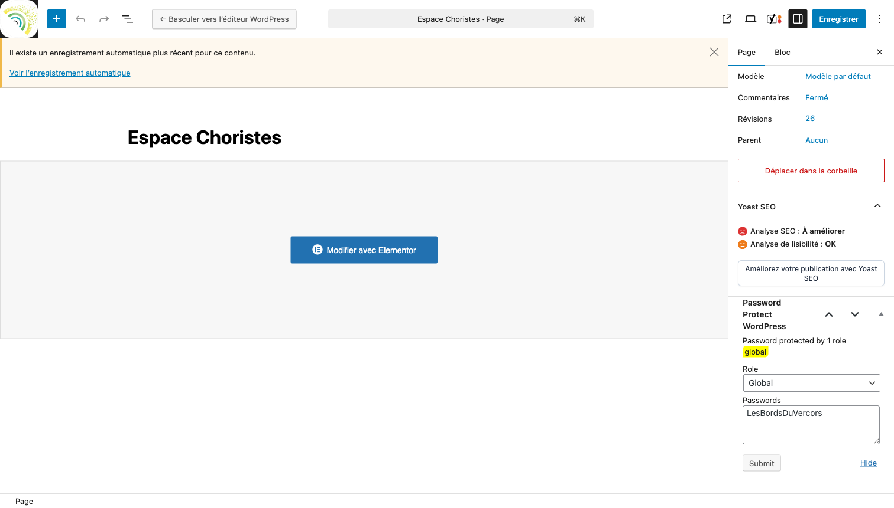
cug38.fr/espace-choristes/). Les choristes actuels seront déconnectés et devront ressaisir le nouveau mot de passe à leur prochaine visite.
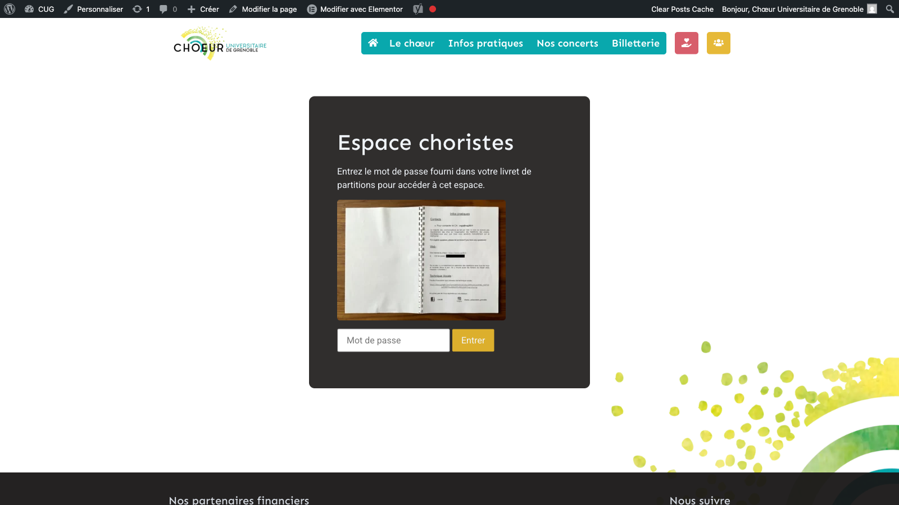
cug38.fr/espace-choristes/, avec ses instructions (« Entrez le mot de passe fourni dans votre livret de partitions… ») + un visuel du livret.Voir aussi : Le contenu → Les pages — Plus de détails sur l'éditeur de pages.
Nouveau CA après chaque AG
À chaque renouvellement du Conseil d'Administration (typiquement après l'assemblée générale annuelle), le trombinoscope affiché sur la page Le chœur et dans l'Espace choristes → Les news du CA doit refléter la nouvelle composition. Tout passe par les articles — aucune intervention dans Elementor.
Ce qu'il faut sous la main
- La liste des nouveaux membres avec leur rôle et leur nom complet.
- Une photo carrée par membre (la grille attend un format carré pour un rendu uniforme).
- Les identifiants WordPress (cf. Bienvenue → Se connecter).
Pas-à-pas
- Se connecter à WordPress.
- Menu de gauche : Articles → Tous les articles. Filtrer par catégorie CA.
- Pour chaque membre qui part : passer son article en brouillon (au survol de la ligne, lien Modification rapide → Statut Brouillon → Mettre à jour). On garde en brouillon plutôt que poubelle, au cas où.
- Pour chaque nouveau membre : créer un nouvel article (ou dupliquer un existant comme modèle), puis remplir :
- Titre = le rôle (ex. « Président », « Trésorière adjointe », « Membre »).
- Extrait (sidebar droite) = le nom complet (ex. « Marie Dupont »).
- Image à la une (sidebar droite) = la photo, format carré.
- Attributs de page → Ordre (sidebar droite) = un nombre. Les valeurs actuelles vont par pas de 10 (Président = 10, Présidente adjointe = 20, etc.). Plus petit = remonte dans la grille.
- Catégorie : cocher CA uniquement.
- Cliquer Publier.
- Vérifier sur la page publique cug38.fr/le-choeur/, section Le CA.
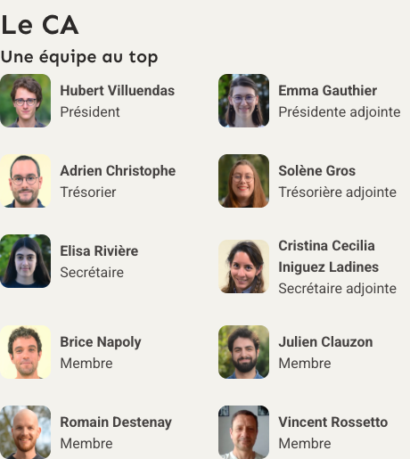
AvancéComment ça marche techniquement
La section CA utilise un widget Elementor Loop Grid filtré sur la catégorie CA, trié par menu_order croissant. Le champ « Ordre » est exposé dans Gutenberg grâce au snippet CUG — Exposer le champ Ordre. Quand on publie / dépublie un article CA, la grille se met à jour automatiquement sans toucher au template.
Voir aussi : Le contenu → Les articles → CA — Structure d'un article CA (champs, ordre).
Nouveau programme chaque semestre
À chaque nouveau semestre (typiquement deux fois par an), l'onglet Le programme de l'Espace choristes doit refléter le nouveau répertoire et les nouveaux fichiers de travail. Le précédent bascule automatiquement dans Anciens programmes.
Ce qu'il faut sous la main
- Le dossier MuseScore sur Drive (lien partageable).
- L'ID de playlist YouTube du semestre (juste la partie après
list=). - Le livret PDF sur Drive — pas IMSLP, pas ailleurs, sur Drive.
- Le dossier MP3s par pupitre sur Drive.
Pour préparer ces fichiers sur Drive (où les ranger, comment partager) : L'infrastructure → Google Drive.
Pas-à-pas
- Préparer les fichiers sur Drive (
orga@cug38.fr) → Fichiers site web → Programme → [nom du semestre]. Récupérer les 4 URLs. - Se connecter à WordPress.
- Articles → Ajouter un article.
- Remplir :
- Titre = nom du semestre (ex. « Programme 2026/2027 — Semestre 1 »).
- Contenu (Gutenberg) = un bloc Titre H4 (nom de l'œuvre) + un paragraphe descriptif (compositeur, partenaires, lieu, dates).
- Catégorie : cocher Programme uniquement.
- Pas d'extrait, pas d'image à la une — le template ne les utilise pas pour cette catégorie.
- Sidebar droite → Champs personnalisés :
programme_youtube_playlist= l'ID de la playlist.programme_musescore= l'URL du dossier MuseScore.programme_livret_pdf= l'URL du livret PDF (Drive).programme_mp3s= l'URL du dossier MP3s.
Champs vides = sous-cartes correspondantes cachées automatiquement.
- Cliquer Publier.
- Vérifier sur l'Espace choristes → onglet Le programme. L'ancien semestre doit avoir basculé dans Anciens programmes.
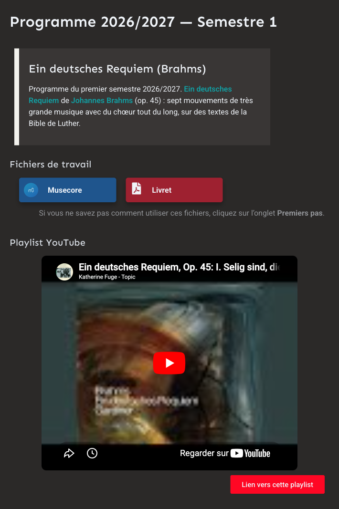
AvancéMettre deux programmes en cours côte à côte
Cas particulier : si deux semestres tournent en parallèle (ex. un programme principal + un programme récurrent comme Conférence ou Cérémonies), on peut afficher les deux dans l'onglet Le programme et décaler l'archive d'un cran.
Côté onglet "Le programme" (Espace choristes) :
- Ouvrir la page Espace Choristes dans Elementor.
- Sélectionner la Grille de boucle de l'onglet Le programme.
- Panneau de gauche, onglet Contenu → Query : passer Posts Per Page de 1 à 2.
- Enregistrer. Les 2 programmes les plus récents s'affichent côte à côte.
Côté onglet "Anciens programmes" (pour exclure les 2 affichés en courant) :
- Sélectionner la Grille de boucle de l'onglet Anciens programmes.
- Panneau de gauche, onglet Contenu → Query, section Exclude → mettre Offset à 2 (au lieu de 1 par défaut).
- Enregistrer. La grille saute les 2 premiers articles (déjà affichés en courant) et liste à partir du 3e.
Pour revenir à un seul programme en cours : repasser Posts Per Page à 1 et Offset à 1.
AvancéComment ça marche techniquement
Une Grille de boucle Elementor sur le template Programme (post id 3073) lit les articles catégorie Programme et trie par date DESC. La première card = le programme courant ; les suivantes vont dans la grille « Anciens ». Les sous-cartes (MuseScore / YouTube / livret / MP3s) utilisent le pattern cug-cond / cug-cond-host avec les shortcodes [programme_musescore], [programme_livret_pdf], etc. — voir Catalogue des snippets.
Voir aussi : Le contenu → Les articles → Programme — Structure d'un article Programme (4 champs personnalisés, shortcodes).
Ouverture de la billetterie quelques semaines avant chaque concert
Quand la billetterie d'un concert ouvre, deux articles entrent en scène : (1) l'article Billetterie qui pilote la page /billetterie/ et la card billetterie de la home, et (2) une Actualité "Billetterie ouverte" qui annonce l'ouverture et apparaît dans les cards du haut de la home.
Étape 1 — Créer l'article Billetterie
Ce qu'il faut sous la main
- L'affiche du concert.
- La description du programme.
- Les liens HelloAsso de la billetterie (un par session).
- Le nom du lieu tel qu'on veut le voir sur la carte (ex. « Espace Bergès Villard-Bonnot »).
- La date de fin souhaitée — typiquement le lendemain du dernier concert (format
YYYY-MM-DD).
Pas-à-pas
- Se connecter à WordPress.
- Articles → Ajouter un article.
- Remplir :
- Titre = nom court du concert (ex. « Materia Symphony »).
- Extrait = sous-titre (ex. « et autres musiques de jeux vidéo »).
- Image à la une = l'affiche.
- Contenu (Gutenberg) = paragraphes descriptifs + bloc de boutons HelloAsso (un bloc Boutons, un bouton par session avec son URL HelloAsso).
- Catégorie : cocher Billetterie uniquement.
- Sidebar droite → Champs personnalisés :
date_fin= la date jusqu'à laquelle la campagne reste visible (YYYY-MM-DD, en général le lendemain du dernier concert).event_map= le nom du lieu. La carte Google Maps se construit toute seule.
- Cliquer Publier.
Étape 2 — Créer l'Actualité "Billetterie ouverte"
Pas-à-pas
- Toujours dans le contenu : Articles → Ajouter un article.
- Remplir :
- Titre = court et accrocheur (ex. « Billetterie ouverte pour Materia Symphony »).
- Contenu (Gutenberg) = un paragraphe d'annonce + un lien « Plus d'informations ici » qui pointe vers la page Billetterie.
- Image à la une = format paysage (l'affiche recadrée si besoin — sinon recadrage moche sur la card).
- Extrait = 1-2 lignes — c'est ce texte qui s'affiche sur la card de la home. À ne pas oublier.
- Catégorie : cocher Actualités uniquement.
- Cliquer Publier.
- Vérifier la home : la card 1 doit afficher cette nouvelle actualité, et la card billetterie doit afficher le nouveau concert.
Étape 3 — Contacter les inscrits à la newsletter
Pas-à-pas
- Se connecter à Drive avec
orga@cug38.fr. - Ouvrir le Sheet Newsletter dans My Drive → Fichiers site web. Il contient la liste consolidée des adresses inscrites via le formulaire S'inscrire de la page Billetterie (alimenté automatiquement par Apps Script — voir L'infrastructure → Google Drive pour le détail du pipeline).
- Copier la colonne A (les emails). En général on a entre quelques dizaines et quelques centaines d'adresses.
- Composer le message depuis Gmail
orga@cug38.fr(ou Mailchimp / Brevo si on préfère) : sujet court, lien vers la page Billetterie, mention des dates et du lieu, lien vers HelloAsso. - Coller les adresses en Cci (et pas dans le champ À) — un seul envoi de masse, sans exposer les adresses des destinataires les unes aux autres.
- Mettre
orga@cug38.frdans le champ À (l'envoi à soi-même + Cci = pratique courante pour les newsletters associatives). - Envoyer.
date_fin n'est pas passée). Actualité « Billetterie ouverte » → cards 1 ou 2 du haut de la home. Email newsletter → dans les boîtes des inscrits, avec un retour direct vers la page Billetterie.
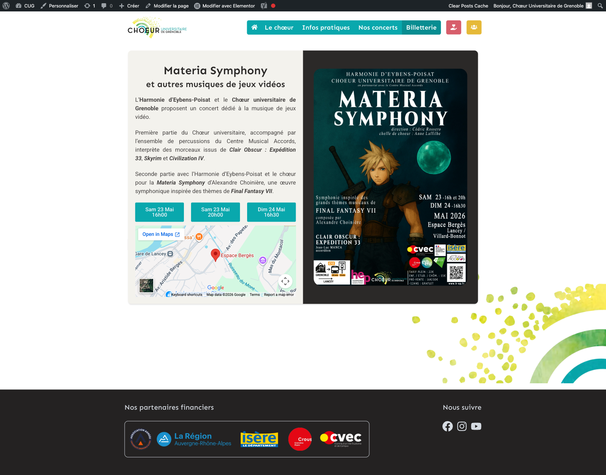
AvancéComment ça marche techniquement
La page Billetterie contient une Grille de boucle filtrée par le snippet billetterie_active (articles catégorie Billetterie avec date_fin ≥ aujourd'hui). Si aucun article n'est actif, un placeholder « pas encore ouverte » s'affiche à la place, grâce au shortcode sentinelle [no_active_billetterie] + le pattern cug-cond / cug-cond-host. La carte du lieu est rendue par le shortcode [event_map_embed] qui lit le champ event_map. Catalogue snippets : Catalogue des snippets.
Voir aussi : Le contenu → Les articles → Billetterie — Structure d'un article Billetterie (date_fin, event_map, etc.).
Archivage du concert dans les jours qui suivent le concert
Après un concert, le travail principal est de créer une fiche Projet qui ira rejoindre l'archive sur la page Nos concerts et remontera sur la home (3e card Notre dernier concert). C'est elle qui rassemble vidéo, affiche, partenaires, programme musical.
date_fin de l'article Billetterie est dépassée, l'article bascule automatiquement hors de la page Billetterie et de la home. Rien à faire pour la retirer.
Créer la fiche Projet
Ce qu'il faut sous la main
- L'affiche du concert.
- Le résumé court (dates, programme en un mot) pour l'extrait.
- L'URL YouTube de la captation si elle est déjà en ligne (sinon on l'ajoutera plus tard).
- Les logos des partenaires (Crous, CVEC, Ville, etc.).
- Le texte descriptif du programme musical.
Pas-à-pas
- Se connecter à WordPress.
- Articles → Ajouter un article.
- Remplir les méta-données dans l'éditeur Gutenberg :
- Titre = nom du concert (sert de titre de card + H1 de la fiche détail).
- Extrait (sidebar droite) = court résumé (dates, programme). Visible sur la card de la grille.
- Image à la une (sidebar droite) = l'affiche, format portrait (verticale sur la card de la grille).
- Catégorie : cocher Projets uniquement.
- Cliquer Publier (premier passage pour fixer slug, image, extrait).
- Cliquer le bouton bleu Modifier avec Elementor en haut à gauche pour basculer en édition visuelle.
- Construire le contenu de la fiche dans Elementor — le plus simple est de dupliquer la fiche d'un concert précédent et de tout remplacer :
- Vidéo YouTube embarquée (widget Vidéo).
- Affiche du concert.
- Section « Au programme » avec texte descriptif.
- Logos partenaires (Crous, CVEC, Ville, etc.).
- Mettre à jour. Vérifier sur la home (3e card) et sur la page Nos concerts.
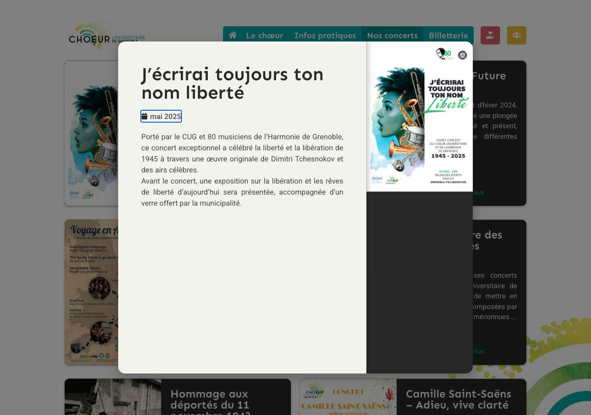
Voir aussi : Le contenu → Les articles → Projets — Structure d'une fiche Projet + pièges Elementor.
Captations et photos quand la vidéo et les photos sont prêtes
Quand la captation vidéo d'un concert est mise en ligne sur la chaîne YouTube du CUG, on crée un article Youtube qui apparaît sur la 4e card de la home. En parallèle, les photos du concert sont rangées dans le Drive pour alimenter l'Espace choristes.
La captation vidéo
youtube-link contient l'URL — la card de la home embarque la vidéo automatiquement.
Ce qu'il faut sous la main
- L'URL YouTube complète de la vidéo (
https://www.youtube.com/watch?v=XXXX). - Le titre du concert / de la captation.
- Un court texte descriptif du concert.
Pas-à-pas
- Sur YouTube (chaîne du CUG, compte
orga@cug38.fr) : ajouter la vidéo à la playlist Captations → la playlist est ici. Clic sur les trois points (···) de la vidéo → Enregistrer dans la playlist → cocher Captations. - Se connecter à WordPress WordPress.
- Articles → Ajouter un article.
- Remplir :
- Titre = titre du concert / de la captation. Obligatoire.
- Contenu (Gutenberg) = un court paragraphe descriptif. Obligatoire.
- Catégorie : cocher Youtube uniquement.
- Pas d'image à la une, pas de vignette à ajouter — la card de la home affiche directement la vidéo YouTube.
- Sidebar droite → Champs personnalisés :
youtube-link= l'URL YouTube complète. Indispensable — sans ce champ, la vidéo ne s'affiche pas. - Cliquer Publier.
- Vérifier sur la home : la card « Notre dernière captation » doit afficher la nouvelle vidéo.
- Ajouter la vidéo dans la fiche Projet du concert archivé : Articles → Tous les articles, filtrer catégorie Projets, trouver la fiche du concert (celle qu'on a créée à l'étape Archivage du concert), cliquer Modifier avec Elementor. Insérer ou mettre à jour le widget Vidéo avec l'URL YouTube qu'on vient de publier. Mettre à jour la page.
Les photos du concert
Pas-à-pas
- Se connecter à Drive avec
orga@cug38.fr. - Naviguer vers My Drive → Archives (articles, photos) → Photos du Choeur.
- Créer un sous-dossier au nom du concert ou de la saison (ex.
2025-26 — Materia Symphony) — c'est ce nom qui apparaîtra dans la galerie de l'Espace choristes. - Déposer les photos dedans (.jpg / .png).
- Vérifier sur l'Espace choristes → onglet Photos. Si rien n'apparaît tout de suite, vider le cache via Clear Posts Cache dans le bandeau admin du site.
Détails du plugin Drive Gallery et règles de partage : L'infrastructure → Google Drive.
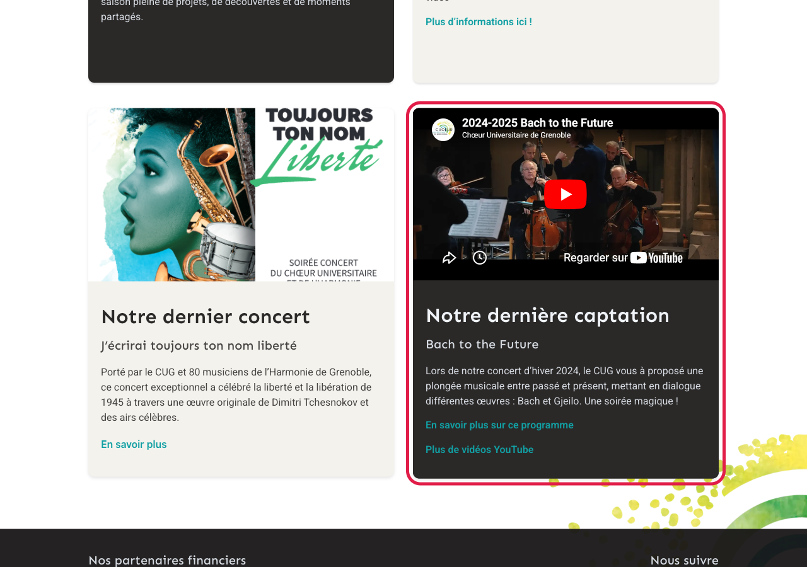
youtube-link de l'article Youtube le plus récent.AvancéComment la vidéo arrive sur la home
Le template de boucle Youtube (post id 2037) utilisé par la card de la home contient un widget Vidéo dont l'URL est une balise dynamique Shortcode appelant [youtube_link]. Ce shortcode (snippet youtube_link) lit le champ personnalisé youtube-link de l'article courant et renvoie l'URL. Détails : Le design → Le pattern shortcode/dynamic-tag.
Voir aussi : Le contenu → Les articles → Youtube — Structure d'un article Youtube (champ youtube-link).
Autres articles à tout moment
La home affiche en haut les 2 dernières Actualités publiées. La plupart sont créées dans le contexte d'une tâche dédiée (Les inscriptions, Ouverture de la billetterie). Pour le reste — annonce ponctuelle, message saisonnier, communication libre — c'est ici. Et comme pour Les inscriptions, plusieurs Actualités existent déjà dans la base et peuvent être remises devant en changeant simplement leur date de publication.
Cas 1 — Republier un article existant (le plus rapide)
Plusieurs Actualités saisonnières dorment dans la base et tournent d'une saison à l'autre. Exemple : l'article "Bonnes vacances" remis devant chaque été. Procédure :
Pas-à-pas
- Se connecter à WordPress.
- Menu de gauche : Articles → Tous les articles, filtrer par catégorie Actualités.
- Trouver l'article à remettre devant (ex. "Bonnes vacances", "Joyeuses fêtes", "Reprise des répétitions", etc.).
- Cliquer Modifier.
- Optionnel : ajuster le titre ou le contenu si la formulation évolue.
- Sidebar droite, section Publication → cliquer sur la date de publication → mettre la date d'aujourd'hui (ou la date à laquelle on veut qu'il remonte).
- Cliquer Mettre à jour. L'article remonte automatiquement en tête de la home.
Cas 2 — Créer une Actualité de zéro
Si aucun article existant ne convient, en créer un nouveau.
Ce qu'il faut sous la main
- Un titre court et accrocheur.
- Un paragraphe d'annonce + optionnellement un lien « Plus d'informations » (vers une page du site ou une ressource externe).
- Une image à la une au format paysage (sinon recadrage moche sur la card).
Pas-à-pas
- Se connecter à WordPress.
- Articles → Ajouter un article.
- Remplir :
- Titre = court et accrocheur (devient le titre de la card).
- Contenu (Gutenberg) = un paragraphe d'annonce + un lien éventuel.
- Image à la une (sidebar droite) = format paysage.
- Extrait (sidebar droite) = 1-2 lignes — c'est ce qui s'affiche sur la card de la home. À ne pas oublier : sinon WordPress prend les premiers mots du contenu et c'est rarement adapté.
- Catégorie : cocher Actualités uniquement.
- Cliquer Publier.
- Vérifier la home : la card 1 doit afficher cette nouvelle actualité.
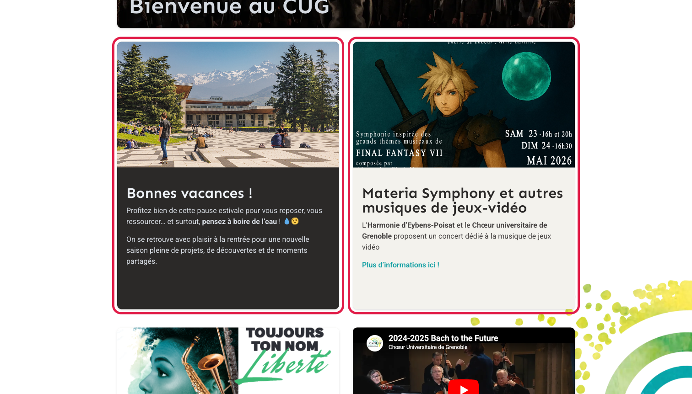
Voir aussi : Le contenu → Les articles → Actualités — Structure d'un article Actualités.
Blog du CA quand le CA a quelque chose à dire aux choristes
Le « fil info » dans l'Espace choristes accueille les communications internes du CA aux choristes : retour de répétition, info logistique, anecdotes, changements de programme. Invisible des visiteurs grand public — uniquement dans l'espace privé.
Pas-à-pas
- Se connecter à WordPress.
- Articles → Ajouter un article.
- Remplir :
- Titre = sujet de la news (apparaît en haut de la card).
- Contenu (Gutenberg) = texte libre. Listes, paragraphes, liens, images inline. Ton interne, moins formel que les Actualités publiques.
- Catégorie : cocher Blog uniquement.
- Pas d'extrait, pas d'image à la une — le template ne les utilise pas. Les visuels passent directement dans le contenu Gutenberg.
- Cliquer Publier.
- Vérifier sur l'Espace choristes → onglet Les news du CA, section « Le fil info ».
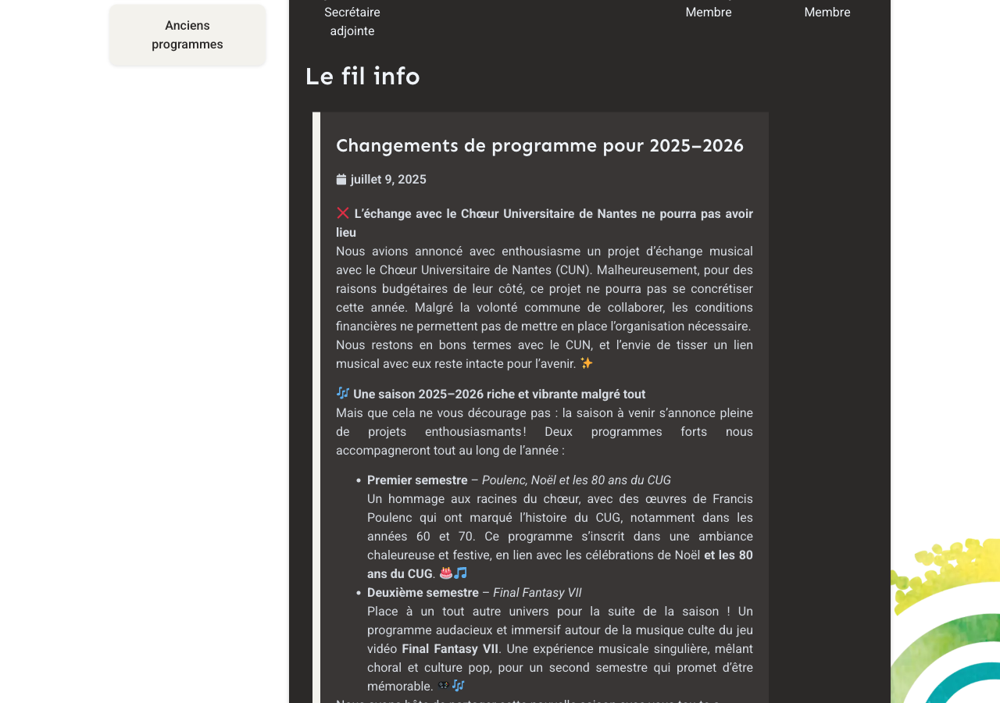
Voir aussi : Le contenu → Les articles → Blog — Structure d'un article Blog.
Se connecter à WordPress
L'accès au site passe par un compte Elementor (et non par les utilisateurs WordPress classiques). Les identifiants — email + mot de passe — sont stockés dans le coffre LastPass de l'association. La procédure complète prend ~1 minute, avec un détour obligatoire par un bug récurrent au milieu.
Récupérer les identifiants dans LastPass
Ouvrir le coffre LastPass de l'association → chercher l'entrée "Elementor — site CUG" (ou équivalent). Copier l'email et le mot de passe du compte Elementor.
Ouvrir cug38.fr/wp-admin
Page de connexion WordPress. Ignorer les champs Identifiant / Mot de passe de WordPress — on passe par Elementor.
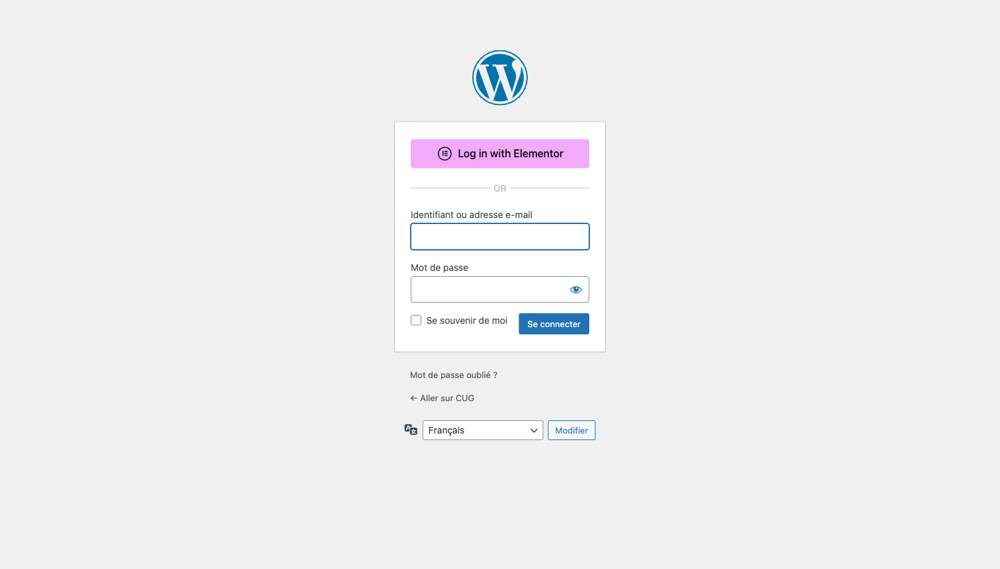
cug38.fr/wp-admin côté déconnecté. Bouton violet Log in with Elementor en haut, formulaire WP natif en dessous (séparé par OR).Cliquer sur Log in with Elementor
Bouton violet en haut. Une page Elementor s'ouvre dans un nouvel onglet.
Saisir email + mot de passe Elementor
Sur la page Elementor Sign in, taper l'email dans le champ Email : le champ mot de passe apparaît juste en-dessous. Coller le mot de passe récupéré dans LastPass, puis cliquer Continue (le gros bouton noir).
Ne pas utiliser Continue with Google ni Continue with SSO.
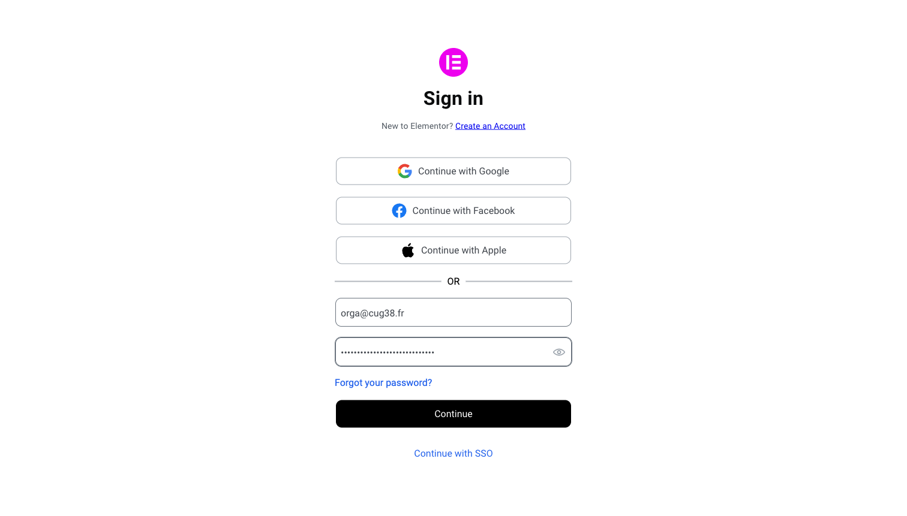
Saisir le code de vérification reçu par mail (2FA)
Elementor envoie un code à 6 chiffres par e-mail sur orga@cug38.fr. Ouvrir le mail, copier le code, le coller dans le formulaire Elementor, valider.
"Something went wrong" — c'est normal
Elementor affiche "Something went wrong while trying to connect. Please try again later." Ce bug est récurrent et attendu à la première tentative.
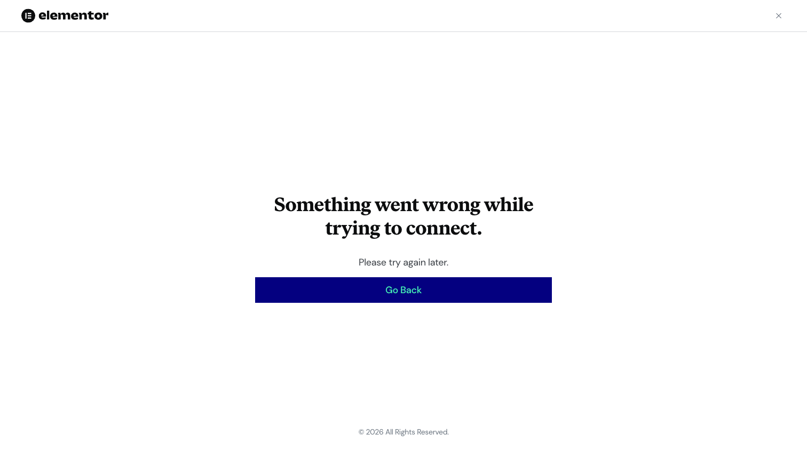
Fermer cet onglet, revenir sur wp-admin
Cmd/Ctrl+W pour fermer l'onglet en erreur. On retombe sur l'onglet cug38.fr/wp-admin initial.
Re-cliquer Log in with Elementor
Cette fois, redirection directe vers le tableau de bord WordPress — pas besoin de retaper email / mot de passe / 2FA, la session Elementor est en place.
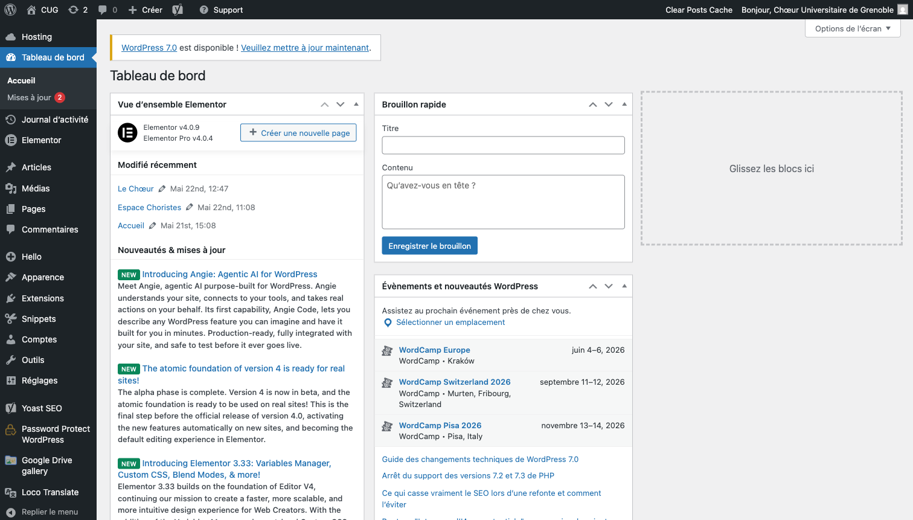
Vérification depuis le site public
Aller sur https://cug38.fr : un bandeau noir doit apparaître tout en haut (CUG, Personnaliser, Modifier la page, Modifier avec Elementor). C'est la preuve que la session est active.
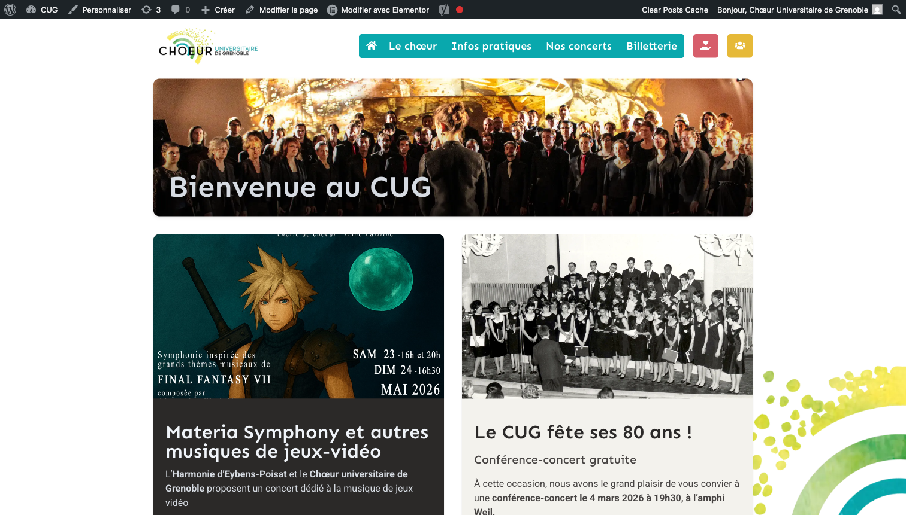
wp-admin → Log in with Elementor → email + mot de passe + (parfois) code 2FA reçu par mail → erreur "Something went wrong" (normal) → fermer l'onglet → re-cliquer Log in with Elementor → tableau de bord.
Le tableau de bord
Une fois connecté, on arrive sur le tableau de bord (cug38.fr/wp-admin) — point d'entrée de WordPress. À gauche, le menu principal regroupe toutes les zones du site. En haut, la barre noire d'admin et le bouton Bonjour, Chœur Universitaire de Grenoble pour gérer le profil.
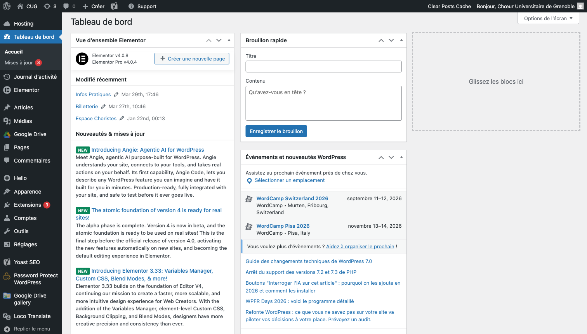
Les entrées du menu de gauche utilisées le plus souvent
- Articles — Les news, projets, captations, blog. Voir détail.
- Pages — Les pages statiques (Accueil, Le chœur, Concerts, etc.). Voir détail.
- Médias — La médiathèque (images uploadées, PDFs).
- Apparence → Menus / Personnaliser — Menus de navigation (voir Les menus) et Customizer WordPress (voir Personnaliser).
- Elementor — Réglages du constructeur visuel et templates globaux.
- Google Drive gallery — Réglages du plugin galerie photos (voir Le plugin Google Drive Gallery).
- Password Protect WordPress — Mot de passe de l'espace choriste.
- Extensions — Plugins installés et mises à jour. Voir détail.
- Comptes — Utilisateurs WordPress (rare — l'accès passe par le compte Elementor, voir Se connecter à WordPress).
Les mises à jour
WordPress, le thème Hello Elementor et les extensions reçoivent des mises à jour régulières. À garder à jour pour la sécurité, mais avec un peu de prudence (les mises à jour majeures peuvent casser des choses).
Où voir les mises à jour disponibles
Tableau de bord → Mises à jour (depuis le menu de gauche). On y trouve : version de WP, version du thème, et la liste des extensions avec leur dernière version.
Ordre conseillé
- Sauvegarder d'abord — sur Elementor Cloud (my.elementor.com → Hosting → Backups), déclencher une sauvegarde manuelle ou vérifier qu'une sauvegarde quotidienne récente existe.
- Les extensions d'abord, une par une (cocher l'extension → Mettre à jour les extensions). Vérifier le site après chaque mise à jour critique (Elementor, PPWP, Google Drive Gallery).
- Le thème ensuite (Hello Elementor). Vérifier le rendu du header / footer.
- WordPress core en dernier. Vérifier le tableau de bord après.
Les pages (Elementor)
Toutes les pages "structurelles" du site sont construites avec Elementor. La liste des pages est dans Pages → Toutes les pages. Pour en modifier une, on l'ouvre dans l'éditeur Elementor (et pas dans l'éditeur natif WordPress).
Procédure standard
- Pages → Toutes les pages dans le menu de gauche.
- Au survol d'une ligne, cliquer Modifier avec Elementor (bouton bleu).
- L'éditeur Elementor s'ouvre. Pour la prise en main complète, voir L'éditeur Elementor.
Quand ne PAS ouvrir avec Elementor — l'exception Espace Choristes
Pour modifier le mot de passe de l'Espace Choristes, il faut ouvrir la page avec l'éditeur natif WordPress (clic direct sur le titre), pas avec Elementor. Le formulaire de mot de passe Password Protect WordPress vit dans la sidebar de l'éditeur WP, invisible côté Elementor.
Les articles
Tout le contenu dynamique du site (actualités, fiches concerts, captations, blog interne, CA, programmes, billetteries) passe par les articles WordPress. Le système est très simple : un article + une catégorie = un emplacement sur le site.
La liste des articles
Menu de gauche → Articles → Tous les articles. Liste filtrable par catégorie, recherchable.
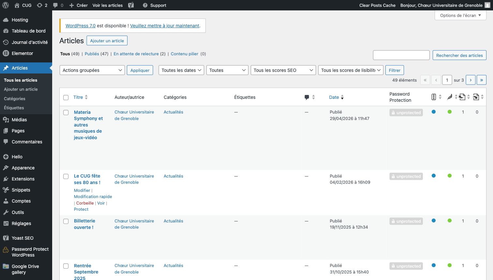
Les 7 catégories — qui sert à quoi
- Actualités
- Annonces ponctuelles. Les 2 dernières remplissent les 2 cards du haut de la home. Pour publier : Les essentiels sur un an → Les inscriptions ou Ouverture de la billetterie.
- Projets
- Un article = un concert / projet (passé ou à venir). Le dernier publié = 3e card de la home, tous = page Nos concerts. Particularité : contenu construit dans Elementor (pas Gutenberg). Pour ajouter un projet : Les essentiels sur un an → Archivage du concert + section Avancée ci-dessous.
- Youtube
- Captation vidéo d'un concert. Le dernier publié = 4e card de la home. Pour publier : Les essentiels sur un an → Captations et photos.
- Blog
- Communications internes du CA aux choristes. Espace choristes uniquement (onglet Les news du CA). Pour publier : Les essentiels sur un an → Blog du CA.
- CA
- Un article par membre du Conseil d'Administration. Affiché en grille sur Le chœur (section CA) et sur l'Espace choristes. Pour mettre à jour : Les essentiels sur un an → Nouveau CA.
- Programme
- Un article par programme musical. Le plus récent = onglet Le programme de l'Espace choristes ; les autres = Anciens programmes. Pour changer de programme : Les essentiels sur un an → Nouveau programme.
- Billetterie
- Un article par campagne de billetterie. Affiché sur la page Billetterie + sur la home (tant que
date_finn'est pas passée). Pour ouvrir une billetterie : Les essentiels sur un an → Ouverture de la billetterie.
date_fin est encore dans le futur.
AvancéProcédure générique d'ajout d'un article (toutes catégories)
Toujours le même flux : Articles → Ajouter un article → saisir le titre + le contenu dans l'éditeur → renseigner dans la sidebar droite l'extrait, l'image mise en avant et la catégorie (une seule), puis Publier.
Les écueils et champs spécifiques à chaque catégorie sont dans les blocs Avancé ci-dessous.
Aller plus loin
Le détail technique de chaque catégorie (champs à remplir, particularités, où ça apparaît) est rangé dans les blocs Avancé ci-dessous, un par catégorie. Le catalogue des snippets du site, qui dépasse les catégories d'articles, est tout en bas. Pour les actions de publication, c'est dans Les essentiels sur un an.
AvancéActualités — structure d'un article
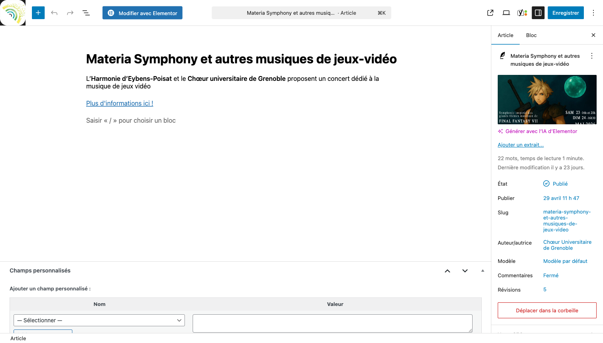
- Titre
- Court et accrocheur, devient le titre de la card.
- Contenu (Gutenberg)
- Un paragraphe d'annonce + un lien « Plus d'informations » qui pointe vers la page concernée (Billetterie, page projet, etc.).
- Image mise en avant
- Affichée en haut de la card. Format paysage indispensable (sinon recadrage moche).
- Extrait
- 1-2 lignes — le texte lisible sur la card. À ne pas oublier, sinon WordPress prend les premiers mots du contenu.
AvancéProjets / Concerts — structure (contenu construit dans Elementor)
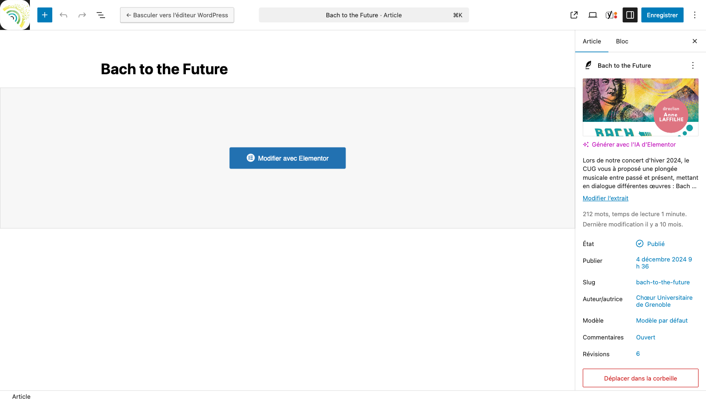
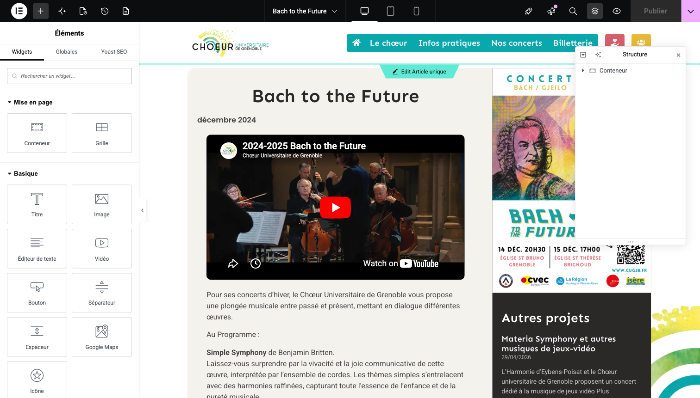
- Titre
- Nom du concert. Sert de titre de card + H1 de la fiche détail.
- Contenu
- Édité dans Elementor. Liberté totale.
- Image mise en avant
- Affiche du concert. Format portrait (verticale sur la card).
- Extrait
- Court résumé (dates, programme en un mot) — visible sur la card de grille.
AvancéYoutube — structure + le champ youtube-link
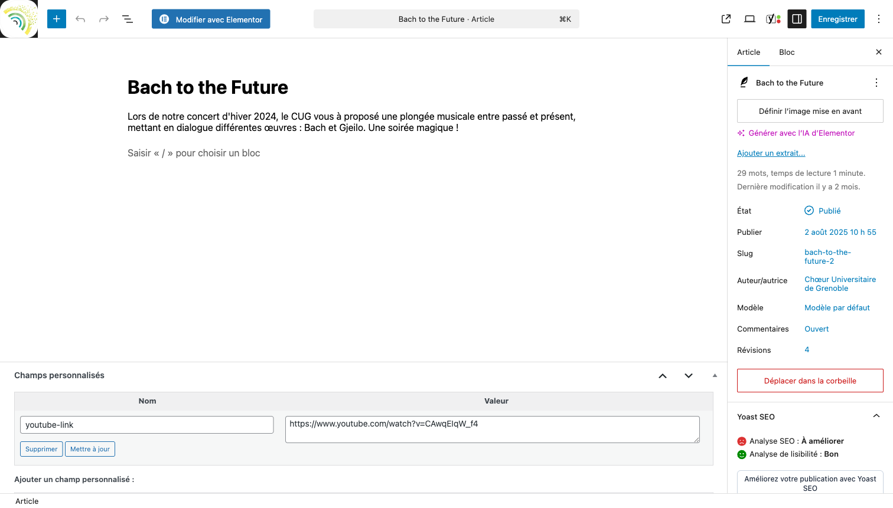
youtube-link = l'URL YouTube — c'est cette valeur que lit le widget Vidéo de la home.Le widget Vidéo de la card YouTube de la home ne pointe pas sur une URL fixe — il lit le champ personnalisé youtube-link de l'article courant via un shortcode. Mécanique technique complète : Le pattern shortcode/dynamic-tag.
- Titre
- Titre du concert / de la captation. Affiché sous la vidéo.
- Champ personnalisé
youtube-link - Indispensable. L'URL YouTube complète. Si le panneau Champs personnalisés n'apparaît pas, l'activer via Options de l'écran en haut à droite.
- Image mise en avant
- Vignette miniature affichée tant que l'utilisateur n'a pas lancé la vidéo.
- Contenu / Extrait
- Optionnels — la home n'affiche que le titre et la vidéo.
AvancéBlog — structure d'un article interne
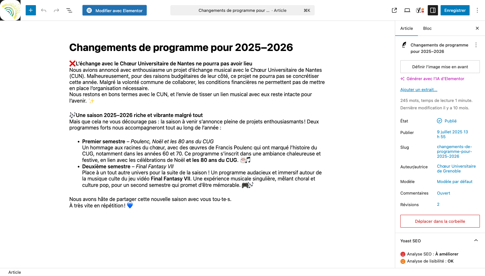
- Titre
- Sujet de la news. Apparaît en haut de la card du Fil info.
- Contenu Gutenberg
- Texte libre — listes, paragraphes, liens, images inline. Ton interne, moins formel que les Actualités publiques.
- Extrait
- Résumé de la news (1-2 phrases) qui apparaît sur la card.
- Image mise en avant
- Pas nécessaire — le template
Blog dark/Blog dark rightne l'utilise pas. Les visuels passent directement dans le contenu Gutenberg.
Où ça s'affiche : onglet Les news du CA de l'Espace choristes, grille « Le fil info ». Templates de card alternés (Blog dark image en haut / Blog dark right image à droite).
AvancéCA — structure + champ Ordre (menu_order)
- Titre
- Le rôle / statut (ex. « Président », « Trésorière adjointe », « Membre »). Affiché en grand sur la carte.
- Extrait
- Le nom complet du titulaire (ex. « Hubert Villuendas »). Affiché en plus petit sous le rôle.
- Image mise en avant
- La photo du membre (format carré ou portrait — uniforme dans la médiathèque
2025/01/Prenom_big.webp). - Contenu Gutenberg
- Vide. Aucun bouton ni détail supplémentaire sur la carte.
- Catégorie
- CA (id 16) uniquement.
Ordre d'affichage : champ natif WordPress menu_order, visible dans la sidebar Gutenberg sous Attributs de page → Ordre. Les valeurs vont par pas de 10 (Président = 10, Présidente adjointe = 20, …). Plus petit = remonte dans la grille. Le champ « Ordre » est visible grâce au snippet CUG — Exposer le champ Ordre.
Où ça s'affiche : page publique /le-choeur/, section Le CA — Une équipe au top + Espace choristes → Les news du CA. Loop Grid trié par menu_order croissant.
AvancéProgramme — structure + 4 champs personnalisés + shortcodes
Un article par programme : 2 programmes par semestre (un par concert majeur) + 2 programmes récurrents (Conférence, Cérémonies). Chaque article expose ses ressources de travail aux choristes via 4 custom fields.
- Titre
- Nom du programme. Convention : commence par Programme (ex. « Programme 2025/2026 — Semestre 2 »).
- Extrait
- Sous-titre / nom de l'œuvre.
- Image mise en avant
- Affiche du programme (facultatif).
- Contenu Gutenberg
- Bloc H4 (titre œuvre) + paragraphe descriptif avec liens.
- Catégorie
- Programme (id 17) uniquement.
4 champs personnalisés (sidebar Gutenberg, panneau Champs personnalisés) — vides = bouton/section cachée automatiquement :
programme_youtube_playlist- L'ID de la playlist YouTube (juste la partie après
list=) — pas l'URL complète. programme_musescore- URL du dossier Drive ou page avec les fichiers Musescore.
programme_livret_pdf- URL du livret PDF (Drive ou IMSLP).
programme_mp3s- URL du dossier MP3s.
Ces champs sont enregistrés (REST + UI Gutenberg) par le snippet CUG — Enregistrer les custom fields content-driven.
Shortcodes disponibles dans le template Programme : [programme_youtube_playlist], [programme_youtube_playlist_embed] (iframe prêt à l'emploi), [programme_musescore], [programme_livret_pdf], [programme_mp3s]. Détails : Catalogue des snippets.
Affichage conditionnel des sous-cartes : chaque sous-carte (MuseScore, MP3s, livret, YouTube) se cache automatiquement si son champ est vide, grâce au pattern cug-cond / cug-cond-host. Détails : Catalogue des snippets.
AvancéBilletterie — structure + filtrage par date_fin + carte du lieu
Un article par campagne de billetterie. Le champ date_fin détermine si elle s'affiche encore sur la home.
- Titre
- Nom court du concert (ex. « Materia Symphony »).
- Extrait
- Sous-titre (ex. « et autres musiques de jeux vidéo »).
- Image mise en avant
- L'affiche du concert.
- Contenu Gutenberg
- Heading H4 (titre œuvre) + paragraphes descriptifs + bloc de boutons HelloAsso (un par session, alignés en flex centré).
- Custom fields
date_fin(YYYY-MM-DD jusqu'à laquelle la campagne reste visible) ;event_map(nom du lieu, ex. « Espace Bergès Villard-Bonnot »).- Catégorie
- Billetterie (id 18) uniquement.
Filtrage automatique par date_fin : le Loop Grid sur la home utilise le Query ID billetterie_active. Le snippet CUG — Filtre Loop Grid billetterie_active hooke sur cette query et ne garde que les articles dont date_fin ≥ aujourd'hui. Une campagne dont le concert est passé disparaît automatiquement, sans intervention manuelle.
Le placeholder « Pas de billetterie ouverte → inscrivez-vous à la newsletter » apparaît à la place via le pattern sentinelle cug-cond-host + shortcode [no_active_billetterie].
Carte du lieu : le shortcode [event_map_embed] lit le champ event_map et rend un iframe Google Maps. Le champ accepte un nom de lieu (préféré, pin rouge garanti) ou une URL Google Maps complète.
billetterie_active qui ne montre que la campagne en cours (placeholder newsletter si rien d'actif). Page Billetterie : Loop Grid non filtré, affiche la campagne quelle que soit la date.
AvancéCatalogue des snippets content-driven
Tous les snippets ci-dessous vivent dans Snippets → Tous les extraits. Ils doivent être actifs pour fonctionner. Désactiver un snippet casse uniquement la fonctionnalité associée — pas le site.
Enregistrement des custom fields
- CUG — Enregistrer les custom fields content-driven
- Enregistre
programme_youtube_playlist,programme_musescore,programme_livret_pdf,programme_mp3s,date_fin,event_mapavecshow_in_rest=true. Permet de les éditer dans Gutenberg (panneau Custom Fields) et de les setter via REST. - CUG — Exposer le champ Ordre (menu_order)
- Active
page-attributessur les articles pour faire apparaître le champ Ordre dans la sidebar Gutenberg. Essentiel pour ordonner manuellement les cartes CA.
Shortcodes Programme
[programme_youtube_playlist]- Renvoie l'URL publique de la playlist YouTube (construite depuis l'ID stocké). À utiliser comme URL d'un widget Bouton via balise dynamique Shortcode.
[programme_youtube_playlist_embed]- Renvoie un
<iframe>YouTube prêt à l'emploi. Attributs :width(def. 560),height(def. 315),id(article spécifique, sinon get_the_ID). [programme_musescore]·[programme_livret_pdf]·[programme_mp3s]- Renvoient l'URL stockée dans le custom field correspondant.
Filtre Loop Grid Billetterie
- CUG — Filtre Loop Grid billetterie_active
- Hook PHP sur
elementor/query/billetterie_active. Quand le widget Loop Grid a son Query ID réglé surbilletterie_active, ce filtre limite les résultats aux articles Billetterie dontdate_fin ≥ aujourd'hui, triés pardate_fincroissante. [no_active_billetterie]- Sentinelle pour le placeholder. Renvoie
·s'il n'y a aucune billetterie active, chaîne vide sinon. À utiliser dans le patterncug-cond/cug-cond-host: container placeholder (newsletter) avec classecug-cond-host, widget Shortcode dedans avec[no_active_billetterie]et classecug-cond. Le CSS global cache le container si la sentinelle est:empty.
Affichage conditionnel
- Pattern sentinelle
cug-cond/cug-cond-host - Pour cacher un container quand un custom field est vide : le container porte
cug-cond-host, contient un widget Shortcode invisible (classecug-cond) qui rend le shortcode lisant le champ ([programme_mp3s], etc.). Si le champ est vide → sortie vide → CSS:has(:empty)cache le container.
Carte Google Maps
[event_map_embed]- Rend un iframe Google Maps depuis le champ
event_map(nom de lieu OU URL embed). Pin rouge garanti avec le mode « nom de lieu ». Attributs :width(def. 400),height(def. 200),url(override),field(custom field name).
Personnaliser (Customizer WordPress)
Le Customizer WordPress est l'outil natif qui existait avant Elementor. Sur le site CUG, on l'utilise rarement, mais il porte 3 réglages importants : le logo du site, du CSS additionnel custom, et le style du formulaire de mot de passe de l'espace choristes.
Comment y accéder
- Depuis le contenu (où vous êtes ici) : menu de gauche → Apparence → Personnaliser.
- Depuis le site public (raccourci, quand on est connecté) : bouton Personnaliser dans le bandeau noir d'admin en haut.
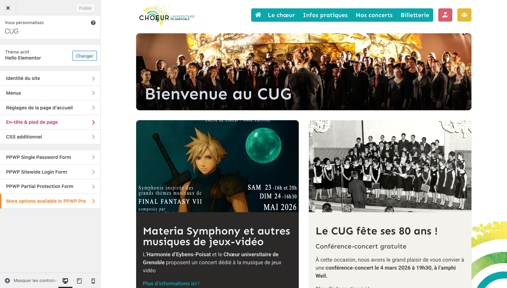
Vue d'ensemble des sections
- Thème actif (Hello Elementor)
- Bouton Changer. À ne surtout pas toucher — toute la mise en page Elementor est calibrée pour Hello Elementor.
- Identité du site
- Logo, titre, slogan, favicon. Utilisé — voir ci-dessous.
- Menus
- Alternative à Apparence → Menus. Même contenu, juste une autre porte d'entrée.
- Réglages de la page d'accueil
- Quelle page sert d'accueil (ici Accueil). Configuré une fois, on n'y revient pas.
- En-tête & pied de page
- Réglages génériques Hello Elementor. Sans effet visible sur le CUG car les templates Theme Builder Elementor prennent le dessus.
- CSS additionnel
- CSS custom appliqué partout. Utilisé — voir ci-dessous.
- PPWP Single Password Form / Sitewide Login Form / Partial Protection Form
- Ajoutées par l'extension Password Protect WordPress. Single Password Form est utilisé pour le style de la page d'entrée de l'espace choristes — voir ci-dessous.
Identité du site (logo, titre, favicon)
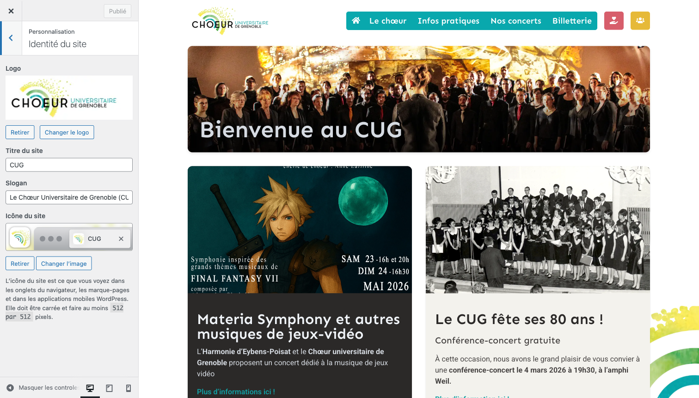
Ce qu'on règle ici
- Logo
- Le logo CUG affiché à gauche du header sur toutes les pages. Le widget Logo du site Elementor (utilisé dans le template header) lit ce logo. Pour le changer : Changer le logo → choisir / téléverser depuis la médiathèque.
- Titre du site
- Chœur Universitaire de Grenoble (CUG). Apparaît dans l'onglet du navigateur (suffixe après le titre de page) et utilisé par certains moteurs de recherche.
- Slogan
- Petit texte sous le titre. Pas affiché sur le site CUG mais conservé pour le SEO.
- Icône du site (favicon)
- La petite icône qui apparaît dans l'onglet du navigateur. Fichier à téléverser via la médiathèque (512×512 px minimum recommandé).
CSS additionnel
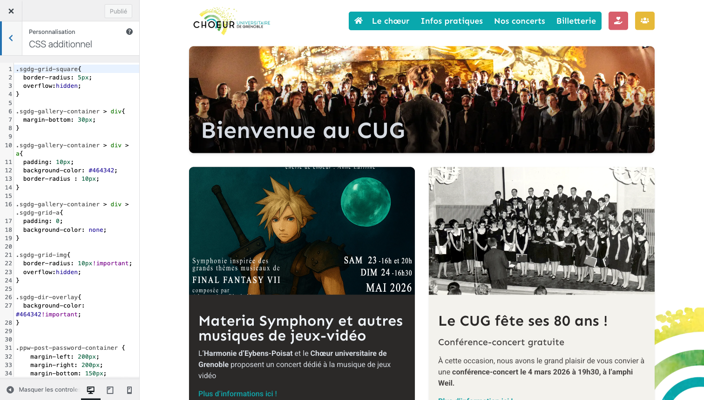
Sur le CUG, ce bloc contient deux groupes de règles essentielles :
1. Style de la galerie Google Drive Gallery (préfixe .sgdg-*)
Bordures arrondies, padding, espacement et background des vignettes / dossiers de la galerie Photos de l'espace choristes. Sans ce CSS, le plugin Google Drive Gallery rendrait avec son look par défaut moins intégré au design du site.
2. Style de la page de mot de passe PPWP (préfixe .ppw-*)
Marges intérieures du formulaire de mot de passe, couleur de bordure du bouton, comportement responsive (suppression des marges en mobile, arrondis 0). Voir PPWP Single Password Form ci-dessous pour le complément côté contenu.
PPWP Single Password Form — la page de login Espace choristes
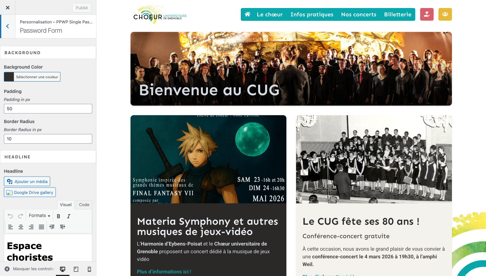
Réglages disponibles
- Background, Padding, Border Radius
- Apparence du conteneur du formulaire.
- Headline
- Titre affiché en haut du formulaire. Actuellement :
<h1>Espace choristes</h1>. - Description
- Texte sous le titre. Actuellement : "Entrez le mot de passe fourni dans votre livret de partitions pour accéder à cet espace." + image du livret de partitions intégrée.
- Wrong Password Message
- Message d'erreur si mauvais mot de passe : "Entrez le bon mot de passe !"
- Failed reCAPTCHA Message
- Message d'erreur si CAPTCHA échoue : "Échec de CAPTCHA".
Les extensions
Les extensions (plugins) ajoutent des fonctionnalités à WordPress. Le site en utilise une dizaine — il faut connaître les principales pour savoir où regarder en cas de souci.
Extensions clés du site
- Elementor + Elementor Pro — le constructeur visuel. Le cœur du design.
- Code Snippets — gestion des snippets PHP custom. Pilier du content-driven : tous les shortcodes qui font le lien entre les champs personnalisés des articles (CA, Programme, Billetterie, Youtube) et les widgets Elementor vivent ici. Voir section dédiée ci-dessous.
- Google Drive Gallery — affiche un dossier Drive comme galerie photo. Voir section dédiée ci-dessous.
- Password Protect WordPress — mot de passe sur les pages (espace choristes). Voir Changer le mot de passe.
- Yoast SEO — référencement (titres, métas, sitemap).
- Loco Translate — traductions des extensions.
- Integrate Google Drive — installé mais pas utilisé (voir Google Drive). Pourrait être désactivé.
- Hello Elementor — thème, pas un plugin à proprement parler.
Le plugin Code Snippets
Plugin Code Snippets (slug code-snippets). Permet d'ajouter du code PHP personnalisé au site sans modifier le thème ni un plugin existant. Accès dans le menu de gauche WordPress : Snippets → Tous les extraits.
Sur le site CUG, c'est la colonne vertébrale de l'approche content-driven. Chaque article qui « pilote » un emplacement Elementor (catégorie CA, Programme, Billetterie, Youtube) le fait via un ou plusieurs snippets actifs ici :
Ce qui vit dans Code Snippets
- Enregistrement des champs personnalisés — un snippet déclare
programme_youtube_playlist,programme_musescore,programme_livret_pdf,programme_mp3s,date_fin,event_mapen post_meta avecshow_in_rest=true. Sans ce snippet, ces champs ne sont ni éditables dans Gutenberg ni accessibles aux templates Elementor. - Exposition du champ Ordre (
menu_order) — un snippet activepage-attributessur les articles pour faire apparaître le champ Ordre dans la sidebar Gutenberg. Essentiel pour ordonner les cartes du CA. - Shortcodes "lecteurs de champ" — un shortcode par custom field :
[youtube_link],[programme_musescore],[programme_livret_pdf],[programme_mp3s],[programme_youtube_playlist]. Chacun renvoie la valeur du champ pour l'article courant. Utilisés dans les templates Elementor via la balise dynamique Shortcode. - Shortcodes "rendus prêts à l'emploi" —
[programme_youtube_playlist_embed]renvoie un<iframe>YouTube complet,[event_map_embed]renvoie un<iframe>Google Maps complet (avec pin rouge garanti). Utilisés dans des widgets Shortcode Elementor. - Filtre de Grille de boucle Billetterie — un snippet hooke sur
elementor/query/billetterie_activeet limite les résultats aux articles Billetterie dontdate_fin ≥ aujourd'hui. C'est lui qui fait disparaître automatiquement la card billetterie de la home quand le concert est passé. - Sentinelle de placeholder —
[no_active_billetterie]renvoie·s'il n'y a aucune billetterie active, chaîne vide sinon. Combiné aux classes CSScug-cond/cug-cond-host, ça fait apparaître le bloc « pas encore ouverte » à la place de la card billetterie. - Pattern d'affichage conditionnel — les classes CSS
cug-cond-hostetcug-condcombinées à un shortcode lecteur de champ permettent de cacher un conteneur entier quand le champ qu'il affiche est vide (sous-cartes Programme cachées si MP3s ou livret manquent, placeholder billetterie affiché si[no_active_billetterie]est non vide).
Le catalogue détaillé avec les sources de chaque snippet est dans Les articles → Catalogue des snippets content-driven.
[programme_musescore]. À chaque rendu, Elementor exécute le shortcode dans le contexte de l'article courant et insère la valeur retournée. Détails et exemples : Le design → Le pattern shortcode/dynamic-tag.
Le plugin Google Drive Gallery
Plugin Image and video gallery from Google Drive (slug technique skaut-google-drive-gallery / sgdg). Sert à afficher le contenu d'un dossier Drive sous forme de galerie sur n'importe quelle page, via un shortcode du type [sgdg path="Mon Dossier"].
Sur le site, il est utilisé uniquement pour la galerie photo de l'espace choristes (onglet Photos, shortcode [sgdg path="Photos du Choeur"]).
Réglages : Google Drive gallery → Basic options
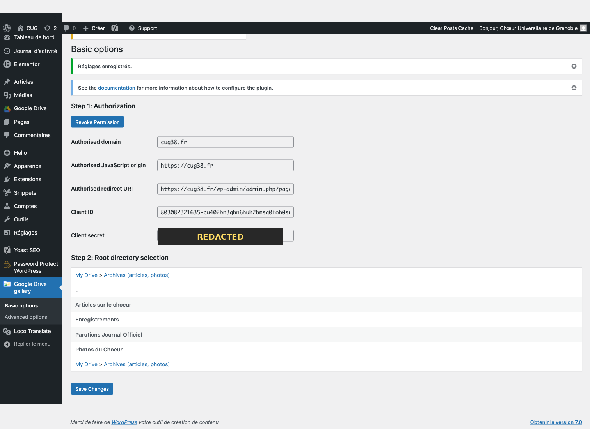
Step 1 — Authorization
Le plugin se connecte à Google Drive via OAuth 2.0. Côté Google, un projet « CUG Drive Gallery » existe dans Google Cloud Console (compte orga@cug38.fr) — c'est lui qui héberge les credentials qui permettent au plugin de lire le Drive.
- Client ID
803082321635-cu402bn3ghn6huh2bmsg0foh0su278ip.apps.googleusercontent.com- Client secret
- Stocké dans le formulaire WordPress (champ masqué). Aussi visible dans la Google Cloud Console OAuth client.
- Authorised redirect URI
https://cug38.fr/wp-admin/admin.php?page=sgdg_basic&action=oauth_redirect- Drive autorisé
orga@cug38.fr(lecture seule)
Tant que rien ne change côté Drive ni côté domaine, ces champs ne sont pas à modifier.
Le bouton Revoke Permission coupe l'accès du plugin au Drive. À utiliser uniquement si on veut tout reconnecter à neuf (ou changer de compte Drive) — voir le bloc Avancé ci-dessous.
Step 2 — Root directory selection
Définit le dossier racine à partir duquel le plugin peut chercher. Tous les shortcodes [sgdg path="..."] du site partent de cette racine.
Actuellement, la racine pointe sur :
My Drive › Archives (articles, photos)
Ce dossier contient notamment le sous-dossier Photos du Choeur (utilisé par le shortcode de la page Espace Choristes) + d'autres sous-dossiers d'archive (Articles sur le choeur, Enregistrements, Parutions Journal Officiel).
Pour le changer : naviguer dans l'arborescence Drive affichée (.. remonte d'un niveau, clic sur un sous-dossier descend), puis cliquer Save Changes en bas une fois sur le bon dossier.
Avancé · Migration vers un nouveau Drive / refonte complète des credentials OAuth
Cette procédure a été suivie en mai 2026 quand on est passé d'un ancien Drive vers le Drive officiel orga@cug38.fr. À reproduire seulement si on doit refaire ce type de migration un jour (changement de compte, perte d'accès aux credentials, etc.).
1. Créer un nouveau projet Google Cloud (avec le compte cible)
- Se connecter à console.cloud.google.com avec le compte Drive cible (ici
orga@cug38.fr). - Créer un nouveau projet (ex. CUG Drive Gallery).
- Dans APIs & Services → Library, activer Google Drive API.
- Dans APIs & Services → OAuth consent screen, configurer en mode Internal (ou External + ajouter
orga@cug38.fren utilisateur test).
2. Créer le client OAuth
- Dans APIs & Services → Credentials → Create Credentials → OAuth client ID.
- Type d'application : Web application.
- Nom : CUG Drive Gallery — WordPress (ou équivalent).
- Authorised redirect URI :
https://cug38.fr/wp-admin/admin.php?page=sgdg_basic&action=oauth_redirect. - Cliquer Create → noter le Client ID et le Client secret.
3. Reconfigurer le plugin WordPress
- Dans WordPress : Google Drive gallery → Basic options → Step 1.
- Si une ancienne autorisation existe, cliquer Revoke Permission d'abord.
- Coller le nouveau Client ID et le nouveau Client secret, cliquer Save Changes.
- Cliquer Grant Permission — Google ouvre un écran de sélection de compte → choisir le compte Drive cible, accepter la permission Drive (lecture seule).
- Subtilité : au premier passage, Google peut renvoyer une page "Something went wrong" — fermer l'onglet et retenter, ça passe.
4. Sélectionner le dossier racine
- Toujours dans Basic options, descendre à Step 2: Root directory selection.
- Naviguer dans l'arborescence Drive (
..remonte) jusqu'au dossier qui doit servir de racine. Pour la config actuelle : Archives (articles, photos). - Cliquer Save Changes.
5. Vérifier que la galerie s'affiche
- Aller sur l'Espace Choristes → onglet Photos.
- Vérifier que les vignettes par année s'affichent (2025-26 en premier).
- Si vide : Clear Posts Cache dans le bandeau noir d'admin + recharger.
- Si le shortcode ne trouve plus rien, vérifier que le sous-dossier référencé (
Photos du Choeurdans notre cas) existe bien sous la nouvelle racine — sinon mettre à jour le shortcode sur la page Espace Choristes (widget Shortcode, onglet Photos).
6. Nettoyer l'ancien projet Google Cloud (optionnel)
Une fois la migration validée, on peut supprimer l'ancien projet Google Cloud (ou simplement révoquer son OAuth client) pour ne pas garder d'accès orphelin au Drive précédent.
Réglages : Google Drive gallery → Advanced options
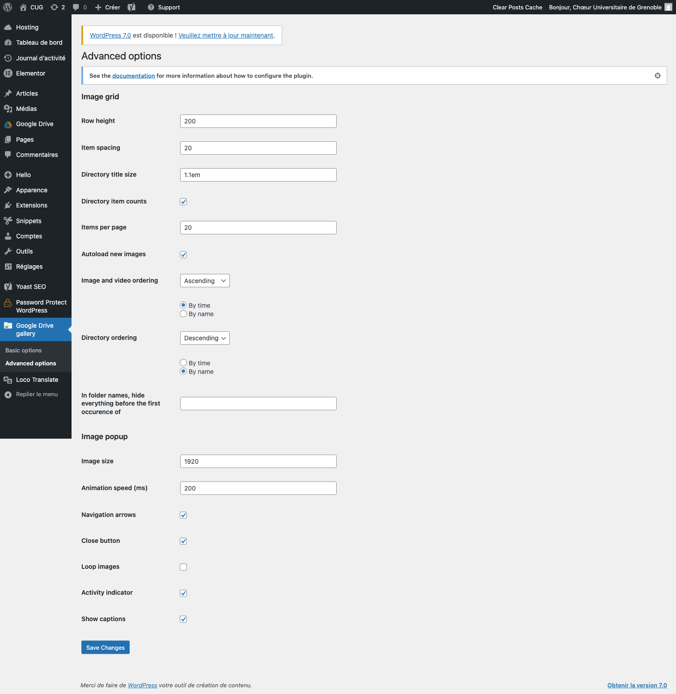
Réglages importants
- Directory ordering
- Actuellement Descending by name. C'est ce qui fait que 2023-24 arrive avant 2022-23, etc. Ne pas modifier — c'est ce qui place naturellement les années récentes en premier.
- Directory item counts
- Coché : affiche les compteurs "2 0 0" à côté du nom du dossier (= nb sous-dossiers / images / vidéos).
- Autoload new images
- Coché : nouvelles images détectées automatiquement (à la prochaine purge de cache).
- Items per page
- 20 — nb max d'éléments par page de la galerie.
- Image popup → Image size
- 1920 px — taille max de l'image dans la lightbox.
Gérer les extensions
Pour activer / désactiver une extension : menu de gauche → Extensions → Extensions installées. Liens Activer / Désactiver sous chaque ligne. Une extension désactivée garde ses données — la réactiver remet tout en marche.
Pour trouver les réglages d'une extension : la plupart ajoutent leur propre entrée dans le menu de gauche WordPress (ex : Elementor, Google Drive gallery, Password Protect WordPress, Snippets). Sinon, certaines se nichent sous Réglages ou Outils.
[youtube_link] ou Google Drive gallery avec la galerie photos), la désactiver casse la fonctionnalité immédiatement. Vérifier les sections dédiées du guide avant.
L'éditeur Elementor
Toutes les pages "publiques" du site (Accueil, Le chœur, Nos concerts, Billetterie, etc.) sont construites avec Elementor — un éditeur visuel par glisser-déposer. Ici, on n'écrit pas de code : on clique sur ce qu'on veut modifier, on change les valeurs, on enregistre.
Ouvrir une page pour l'éditer
Deux chemins, à choisir selon l'humeur. Le plus rapide : depuis la page elle-même côté public.
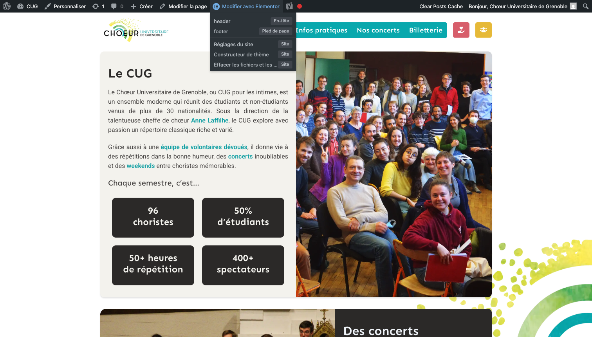
Depuis le site public (le plus rapide)
- Aller sur la page concernée sur
https://cug38.fren étant connecté à WordPress (sinon le bandeau d'admin n'apparaît pas). - Dans le bandeau noir en haut, survoler Modifier la page, puis cliquer Modifier avec Elementor.
- L'éditeur s'ouvre sur cette page précise.
Depuis le contenu
- Dans Pages → Toutes les pages, repérer la page voulue.
- Survol de la ligne → bouton Modifier avec Elementor.
L'interface de l'éditeur
Depuis 2024, Elementor utilise une interface dite Top Bar qui répartit les actions entre une barre du haut, un panneau latéral à gauche et le canvas au centre. Une fenêtre Structure flottante peut être ouverte par-dessus pour naviguer dans l'arbre de la page.
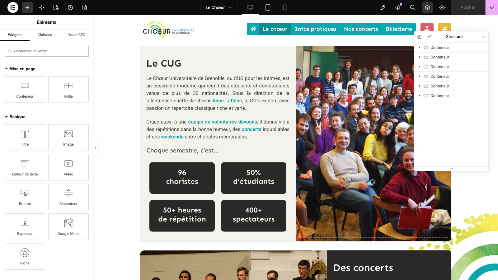
1. La barre du haut (Top Bar)
Bandeau noir tout en haut. Concentre les actions globales :
- À gauche : l'icône E Elementor (menu principal — Réglages de site, Notes, Centre d'aide, Quitter vers le tableau de bord), puis le nom de la page en cours d'édition, l'icône Réglages de la page et l'icône Historique.
- Au centre : l'icône Structure qui ouvre/ferme la fenêtre Structure, et le bouton Aperçu.
- À droite : le sélecteur Responsive (Desktop / Tablette / Mobile pour prévisualiser à chaque taille d'écran), et le bouton Publier / Mettre à jour — rose quand il y a des modifs en attente, noir quand tout est à jour côté serveur.
2. Le panneau latéral (à gauche)
Selon le contexte, deux états :
- Liste des widgets disponibles — quand rien n'est sélectionné. On glisse-dépose un widget (Image, Titre, Bouton, Vidéo, Grille de boucle, etc.) vers le canvas.
- Réglages du widget sélectionné — quand on a cliqué sur un élément du canvas. Trois onglets : Mise en page · Style · Avancé.
L'icône en haut à gauche du panneau (≡ retour) revient à la liste des widgets quand on est sur les réglages.
3. Le canvas (au centre)
Le rendu vivant de la page. On clique directement dessus pour sélectionner un élément. Au survol, des poignées bleues apparaissent en haut à gauche des widgets et conteneurs — utiles pour bien sélectionner un Conteneur sans cliquer accidentellement sur un widget à l'intérieur.
4. La fenêtre Structure (flottante)
Vue en arbre de toute la hiérarchie de la page : Conteneurs imbriqués et widgets. Indispensable sur les pages complexes pour :
- Sélectionner un élément précis caché derrière un autre.
- Réorganiser la page par drag-and-drop dans l'arbre.
- Voir d'un coup d'œil quels éléments ont une Display Condition active (icône dédiée).
Ouverture / fermeture : icône Structure dans la barre du haut, ou raccourci Cmd/Ctrl+I.
Vocabulaire Elementor à connaître
- Conteneur
- Une boîte qui regroupe d'autres éléments. C'est la brique de base de la mise en page (équivalent d'une div HTML). Peut avoir un background image/couleur, du padding, des bordures.
- Widget
- Un composant unitaire : Image, Titre, Texte, Bouton, Vidéo, Grille de boucle, etc.
- Section & Colonne
- Anciens noms des Conteneurs (versions précédentes d'Elementor). Encore présents dans certaines parties du site mais à éviter pour les nouveaux ajouts.
- Template
- Un modèle réutilisable. Sur le site CUG, ils sont surtout utilisés pour les Grilles de boucle (modèle de card) et pour le header / footer (cf ci-dessous).
- Globaux (couleurs, polices)
- Définis une fois et appliqués partout. Sur le CUG, voir la palette Couleurs globales.
AvancéEnregistrer, annuler, historique
Elementor ne sauvegarde rien automatiquement en cours d'édition. Toutes les modifs vivent en mémoire jusqu'à ce qu'on clique sur Publier / Mettre à jour.
Le bouton Publier / Mettre à jour
Tout à droite dans la barre du haut. Tant qu'il est rose, il y a des modifs non sauvegardées. Quand il est noir, tout est à jour côté serveur.
Annuler (Cmd/Ctrl+Z)
Annule la dernière action. Marche tant qu'on n'a pas rechargé l'éditeur. Rétablir : Cmd/Ctrl+Shift+Z.
Historique des révisions
Icône horloge à gauche dans la barre du haut (à côté du nom de la page). Liste les versions enregistrées avec date + auteur, on peut prévisualiser et restaurer. Pour aller plus loin dans le temps : Backups Elementor Cloud.
Le header et le footer du site
Une chose à savoir tout de suite : la barre de navigation en haut (logo CUG + menu + boutons Nous soutenir / Espace choristes) et le footer (partenaires financiers + Nous suivre) ne font pas partie du contenu Elementor de chaque page. Ce sont des templates partagés gérés à part dans le Theme Builder d'Elementor — un seul endroit où on les modifie, et ça se répercute sur toutes les pages. Procédure complète : Header & footer.
Et le bouton Personnaliser du bandeau d'admin ?
Dans le bandeau noir d'admin sur le site public, à côté de Modifier avec Elementor, il y a un bouton Personnaliser qui ouvre le Customizer de WordPress — un outil natif rarement utilisé sur le CUG mais qui sert pour le logo, le CSS custom et le style du formulaire de mot de passe de l'espace choristes. Détails : Personnaliser.
Éditer une page
Tout ce qu'on fait 90 % du temps dans Elementor : sélectionner un élément, changer son contenu, enregistrer. Les exemples ci-dessous sont pris sur la page Le Chœur.
Anatomie d'un Conteneur
Le Conteneur est la brique de base de la mise en page (équivalent d'une <div>). Toute page Elementor est un empilement de Conteneurs imbriqués qui regroupent des widgets. Pour le sélectionner, cliquer sur la poignée bleue avec une croix qui apparaît au-dessus à gauche du Conteneur quand on le survole, ou le sélectionner depuis la Structure à droite.
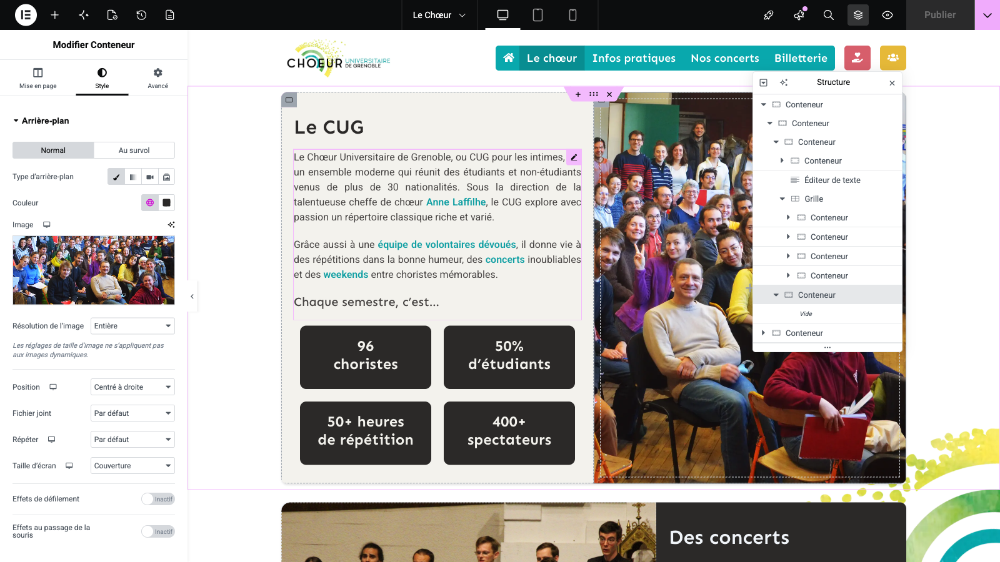
Les trois onglets d'un Conteneur (et de tous les widgets en fait)
- Mise en page
- Comment les éléments à l'intérieur s'organisent : ligne / colonne / grille, alignement, espacements, largeur.
- Style
- L'apparence : arrière-plan (couleur unie, dégradé ou image de fond — c'est ce cas qu'on voit dans le screenshot), bordures, ombres, typographie.
- Avancé
- Marges/paddings, animations, responsive (afficher uniquement sur mobile/desktop), classes CSS custom, attributs HTML.
Les couleurs globales du site
Plutôt que des codes couleur en dur (#5FCA6D) partout, le site définit une palette de couleurs globales. Tout widget peut choisir une couleur par son nom — si on change la valeur de la couleur globale, tout ce qui l'utilise se met à jour partout en une fois.
Accéder à la palette depuis n'importe quel widget
- Cliquer sur un widget (texte, bouton, conteneur…).
- Onglet Style du panneau de gauche, repérer un sélecteur de couleur.
- Cliquer sur la petite icône globe juste à côté du sélecteur → la palette des couleurs globales s'affiche, on choisit par nom.
- Pour gérer la palette (renommer, modifier une valeur, ajouter une couleur) : cliquer sur l'icône roue dentée ⚙ en haut de la palette → ça ouvre la liste complète éditable.
Accès direct alternatif : hamburger ☰ → Réglages de site → Couleurs globales.
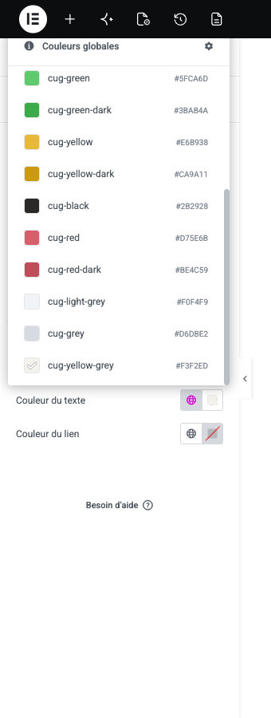
Les 10 couleurs personnalisées du CUG
- cug-green
#5FCA6D— vert clair (boutons primaires, accents)- cug-green-dark
#3BAB4A— vert foncé (hover, contrastes)- cug-yellow
#E6B938— jaune (accent, mise en avant)- cug-yellow-dark
#CA9A11— jaune foncé / ocre- cug-black
#2B2928— noir des fonds sombres et textes- cug-red
#D75E6B— rouge des boutons "Nous soutenir", livrets PDF- cug-red-dark
#BE4C59— rouge bordeaux (hover)- cug-light-grey
#F0F4F9— gris très clair (backgrounds)- cug-grey
#D6DBE2— gris clair (séparateurs, cards)- cug-yellow-grey
#F3F2ED— beige clair (fonds doux)
#D75E6B écrit en dur — comme ça, si on rebrand un jour, on touche un seul endroit et tout se met à jour.
Modifier un texte
Le cas le plus fréquent. Les textes (titres, paragraphes, légendes) sont des widgets Titre ou Éditeur de texte.
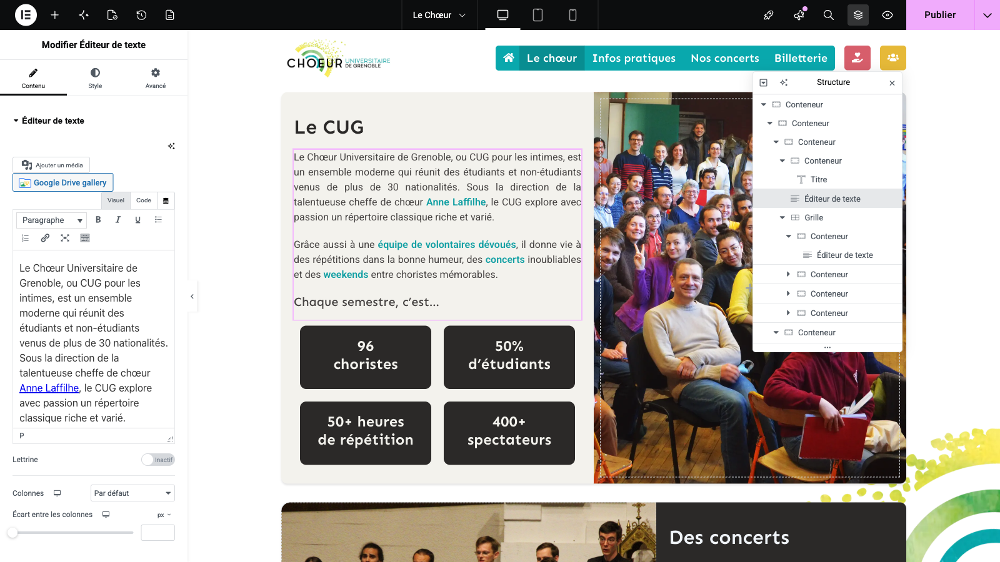
Cliquer sur le texte dans le canvas
Une bordure colorée apparaît : le widget est sélectionné. Le panneau de gauche ouvre l'onglet Contenu.
Modifier dans le panneau de gauche
Le champ Titre (pour un widget Titre) ou la zone TinyMCE (pour un Éditeur de texte) contient le texte. On modifie directement, le rendu se met à jour en temps réel.
(Optionnel) Onglet Style pour la typo
Pour police, taille, couleur, alignement : onglet Style. Préférer toujours les couleurs globales (icône globe à côté du sélecteur).
Modifier une image
Deux cas, à bien distinguer :
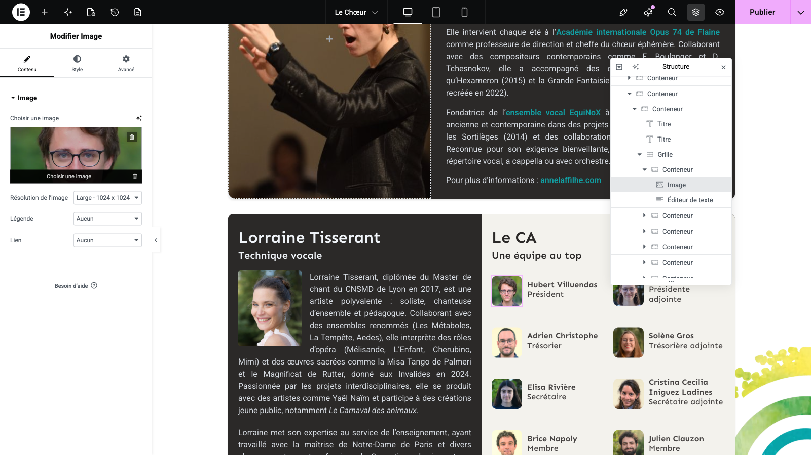
Deux cas à reconnaître
- Widget Image autonome — petite image dans un texte, portrait, photo dans une carte. Sélection directe par clic sur l'image. Panneau de gauche → Choisir une image.
- Image de fond d'un Conteneur — grande image qui occupe toute une section (bandeau "Bienvenue", section "Le CUG"). On sélectionne le Conteneur, pas l'image. Onglet Style → Arrière-plan → Image.
La médiathèque WordPress
Que l'image soit un widget ou un background, le bouton Choisir une image ouvre la médiathèque WordPress — la bibliothèque centrale de toutes les images uploadées sur le site.
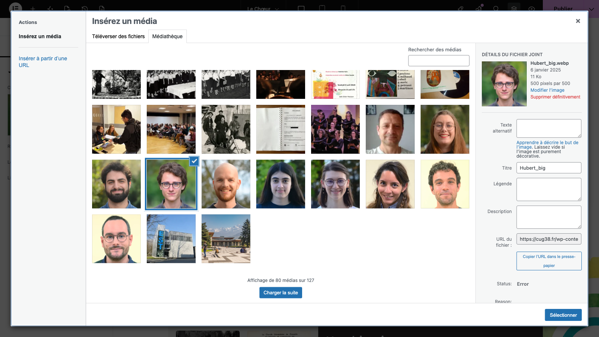
On peut soit choisir une image déjà uploadée (onglet Médiathèque), soit téléverser un nouveau fichier (onglet Téléverser des fichiers). Pour la gérer hors Elementor : Back-office → Médias → Médiathèque.
concert-decembre-2025-affiche.jpg plutôt que IMG_4032.jpg) — mieux pour le SEO et plus facile à retrouver. Remplir aussi le champ Alt dans le panneau de droite pour l'accessibilité et le SEO.
Modifier un bouton
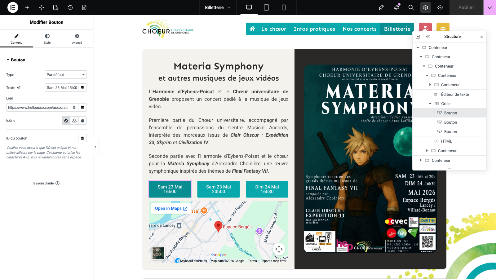
- Cliquer sur le bouton dans le canvas.
- Panneau → onglet Contenu → champ Texte (libellé) + champ Lien (URL).
- Pour ouvrir dans un nouvel onglet : icône engrenage à côté du champ Lien → cocher Ouvrir dans une nouvelle fenêtre.
Lien dans un paragraphe de texte
Dans un widget Éditeur de texte, sélectionner les mots à lier → icône lien dans la barre flottante → coller l'URL.
/le-choeur) plutôt que l'URL complète (https://cug38.fr/le-choeur) — robuste si le domaine change ou en environnement de preview.
Copier-coller (la meilleure technique pour démultiplier)
Pour faire une variante d'un bloc qui marche déjà : copier le bloc existant et l'adapter, plutôt que de refaire à zéro. Ça garantit la cohérence visuelle et évite les pièges de configuration.
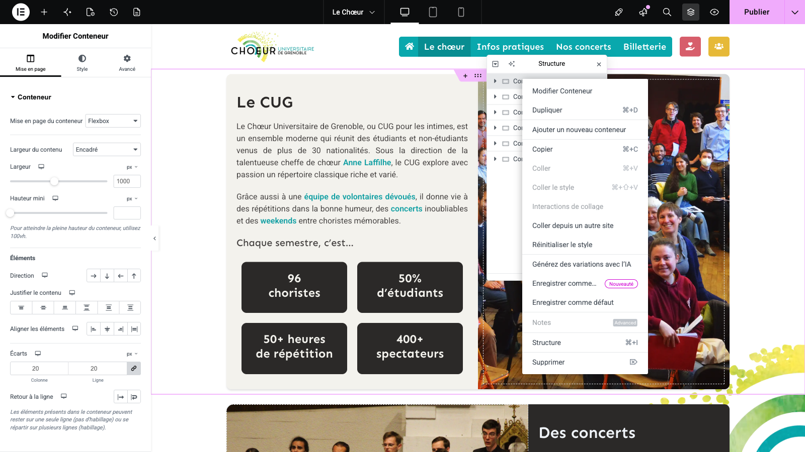
Sélectionner ce qu'on copie
Le plus souvent un Conteneur entier (pas un widget seul) — depuis la Structure à droite, ou via la poignée du Conteneur dans le canvas.
Clic-droit → Copier
Sur le Conteneur sélectionné, clic-droit → Copier. Ou Cmd/Ctrl+C.
Naviguer vers la page cible
Hamburger ☰ → Quitter vers le tableau de bord → ouvrir une autre page avec Elementor.
Clic-droit → Coller
À l'endroit voulu, clic-droit dans une zone vide → Coller. Le Conteneur arrive avec tous ses styles, il ne reste qu'à adapter le contenu.
Responsive (tablette & mobile)
Le site doit s'afficher correctement sur ordinateur, tablette et téléphone. Elementor a deux mécanismes pour ça : un sélecteur de prévisualisation (vérifier le rendu à chaque taille) et un masquage par appareil (n'afficher un élément que sur certaines tailles d'écran).
Prévisualiser le rendu sur chaque appareil
Dans la barre du haut, à droite du nom de la page, trois icônes — Desktop (ordinateur), Tablet (tablette), Mobile (téléphone). Cliquer dessus change la taille du canvas pour simuler chaque écran.
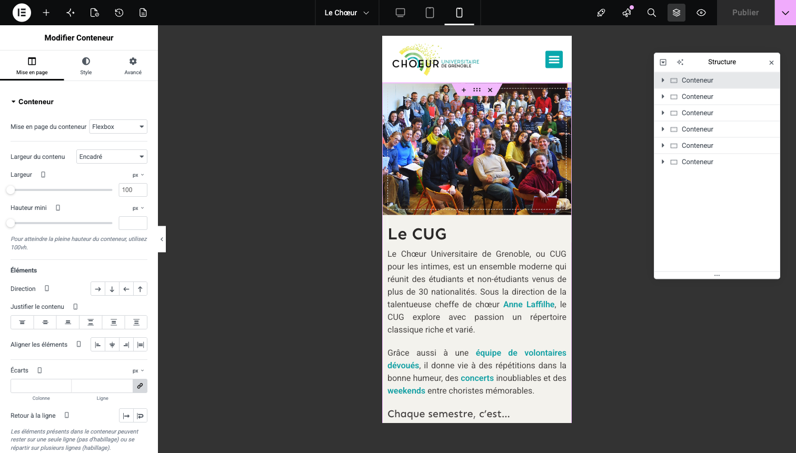
- Cliquer sur l'icône Mobile (ou Tablet) dans la barre du haut.
- Le canvas se rétrécit pour simuler l'écran choisi.
- Vérifier visuellement : les images ne dépassent pas, le texte reste lisible, les boutons sont assez gros, le menu burger fonctionne, etc.
- Refaire pareil avec les autres tailles puis revenir à Desktop pour continuer l'édition.
Réglages spécifiques à chaque taille
Quand on est en mode Tablette ou Mobile, la plupart des réglages d'un widget (taille de police, padding, marges, alignement, etc.) peuvent être ajustés uniquement pour cette taille d'écran — sans toucher aux autres. Une petite icône d'appareil s'affiche à côté du réglage quand il est spécifique à la taille en cours.
C'est ce qui permet, par exemple, d'avoir un titre énorme en desktop et plus modeste en mobile, ou une image en pleine largeur sur desktop et plus compacte sur téléphone, sans avoir à dupliquer les widgets.
Masquer un élément sur certains appareils
Cas d'usage typique : sur le site CUG, le header contient deux versions du menu — la version desktop horizontale et la version mobile turquoise compacte. Chacune est masquée sur les écrans qui ne la concernent pas, comme ça chaque taille n'affiche que sa version.
- Sélectionner le widget ou le Conteneur concerné dans le canvas (ou dans la Structure).
- Panneau de gauche → onglet Avancé.
- Déplier la section Responsive.
- Cocher la case correspondant à l'écran où l'élément doit disparaître : Masquer sur ordinateur, Masquer sur tablette et/ou Masquer sur Portrait mobile.
- Cliquer Publier / Mettre à jour.
Exemples d'utilisation sur le site CUG
- Header
- Le menu desktop horizontal est masqué sur tablette/mobile · le menu compact turquoise est masqué sur desktop. Chaque taille voit la bonne version.
- Billetterie · Hors saison
- Cas particulier géré automatiquement depuis la refonte content-driven : voir Les essentiels sur un an → Ouverture de la billetterie et Le contenu → Les articles → Billetterie. Plus de bascule responsive-hide manuelle.
Templates & grilles de boucle
À part le header / footer, le Theme Builder Elementor héberge aussi deux autres types de templates utilisés sur le site CUG : la fiche détail d'un Projet (Article unique) et les cards affichées par les Grilles de boucle.
La fiche détail d'un Projet — template Projet (Article unique)
Quand on clique sur une card Projets (depuis la home ou la page Nos concerts), la page détail qui s'ouvre est rendue par un template Article unique nommé Projet (ID 68, condition Articles). C'est lui qui définit la mise en page commune à toutes les fiches projet (titre, image à la une, contenu, etc.) — l'équivalent du Theme Builder appliqué à la page détail d'un article.
Pour le modifier (toutes les fiches en une fois) : Constructeur de thème → ligne Projet (type Article unique) → Modifier avec Elementor.
Les Grilles de boucle
La Grille de boucle (Loop Grid) est un widget Elementor un peu spécial : au lieu d'afficher un contenu fixe, elle lit automatiquement les articles d'une catégorie WordPress et les affiche en utilisant un template de card qu'on a dessiné une fois pour toutes.
Où sont utilisées les Grilles de boucle sur le site
- Page d'accueil
- 3 Grilles de boucle (Actualités · Projets · Youtube). Voir Page d'accueil.
- Page Nos concerts
- 1 Grille de boucle qui liste tous les articles de catégorie Projets. Voir Nos concerts.
- Espace choriste — section Blog
- 1 Grille de boucle qui liste les articles de catégorie Blog. Voir Espace choriste.
Anatomie du widget
Sélectionner une Grille de boucle dans le canvas (ou la Structure) ouvre son panneau de réglages :
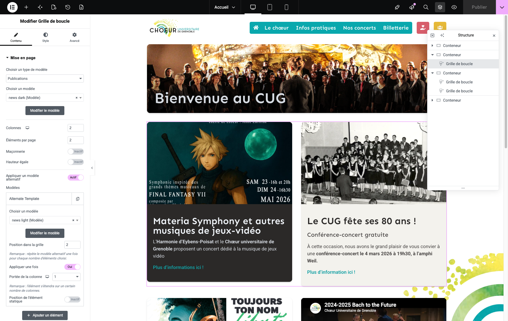
- Source — Le filtre catégorie (term_id). Définit quels articles sont affichés.
- Éléments par page — Combien d'articles afficher (généralement 1, 2 ou plus).
- Modèle principal — Le template Elementor utilisé pour dessiner chaque card. Bouton "Modifier" à côté pour ouvrir le template.
- Modèle alternatif — Permet d'utiliser un 2e template à intervalles réguliers (ex : tous les 2 articles), pour varier l'apparence des cards consécutives.
Modifier le rendu d'une card (= modifier le template)
Cliquer sur "Modifier" à côté du nom du modèle ouvre le template Elementor dédié — c'est une mini-page Elementor à part, qu'on édite comme n'importe quelle page. On peut aussi y accéder par le Constructeur de thème.
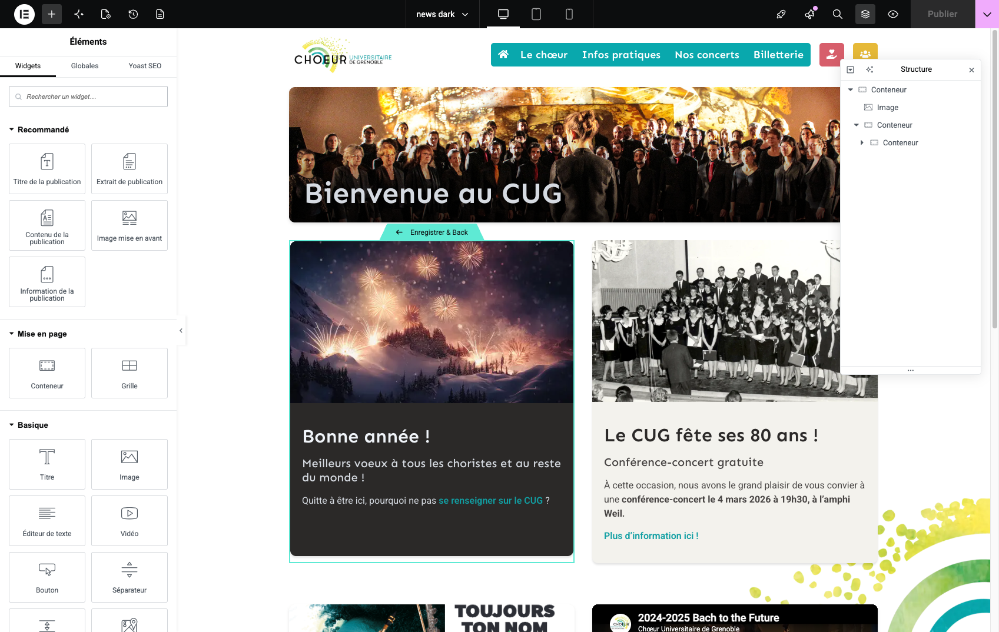
news dark). La barre du haut affiche le nom du template. Modifier ici impacte toutes les cards qui utilisent ce template, automatiquement à la prochaine page chargée.Les templates de boucle utilisés sur le site
news dark- Modèle principal des Actualités. Card avec image en haut et fond foncé (1ère card de la home).
news light- Modèle alternatif des Actualités. Card avec fond clair. 2e card Actualité de la home.
dernier-projet- Modèle de la card "Notre dernier concert" sur la home (Grille de boucle Projets, 1 seul article affiché).
Projet(Boucle)- Modèle de card utilisé sur la page Nos concerts pour afficher l'archive complète des projets (~34 cards). Distinct de
dernier-projetqui est juste pour la home. À ne pas confondre non plus avec le template Projet Article unique (la fiche détail, ci-dessus). youtube- Modèle de la card Youtube. Utilisé sur la home. Le widget Vidéo de ce template utilise le pattern shortcode → balise dynamique — voir Le pattern shortcode/dynamic-tag pour le content-driven ci-dessous.
Blog dark- Modèle principal des news du CA (catégorie Blog). Utilisé dans l'onglet "Les news du CA" de l'espace choristes.
Blog dark right- Modèle alternatif Blog, alterne avec
Blog darktous les 2 articles pour donner une variation visuelle (image à droite plutôt qu'en haut).
AvancéLe pattern shortcode/dynamic-tag — utilisé partout en content-driven
Quasiment tout le content-driven du site (Youtube, Programme, Billetterie) repose sur le même pattern à trois pièces. Comprendre ce pattern une fois suffit pour intervenir sur n'importe quelle catégorie content-driven. Cette section l'explique avec l'exemple Youtube — c'est l'instance la plus simple — puis liste toutes les autres utilisations du pattern sur le site.
Le pattern à trois pièces
- Un champ personnalisé sur l'article (post_meta WordPress) — c'est la valeur qu'on saisit dans WordPress.
- Un shortcode (snippet PHP dans Code Snippets) qui lit ce champ et renvoie sa valeur (ou un rendu HTML prêt à l'emploi).
- Une balise dynamique Shortcode sur un champ d'un widget Elementor (URL, src, classes CSS, contenu HTML…). Au rendu, Elementor exécute le shortcode dans le contexte de l'article courant et insère le résultat.
Exemple canonique — la card YouTube de la home
1. Le champ personnalisé youtube-link sur l'article
Standard WordPress (post_meta). Visible et éditable dans l'éditeur d'article, panneau Champs personnalisés. Une clé par article, valeur = URL YouTube.
2. Un shortcode [youtube_link] qui lit ce champ
Défini par un snippet PHP dans Code Snippets. Le snippet s'appelle « CUG — Shortcode [youtube_link] pour la card YouTube », est actif, en scope global.
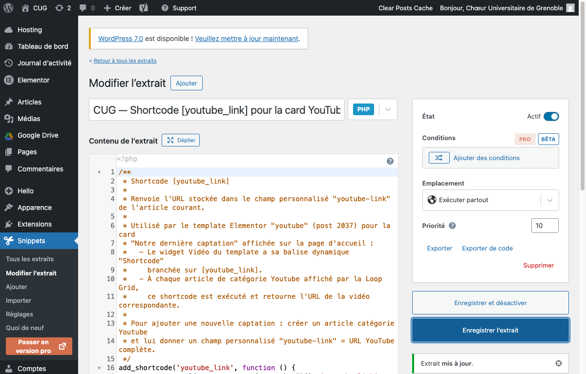
add_shortcode('youtube_link', fn() => esc_url(get_post_meta(get_the_ID(), 'youtube-link', true)));3. La balise dynamique Shortcode sur le widget Vidéo du template youtube
Dans l'éditeur Elementor du template, le champ « Lien » du widget Vidéo a sa balise dynamique Shortcode branchée avec la valeur [youtube_link].
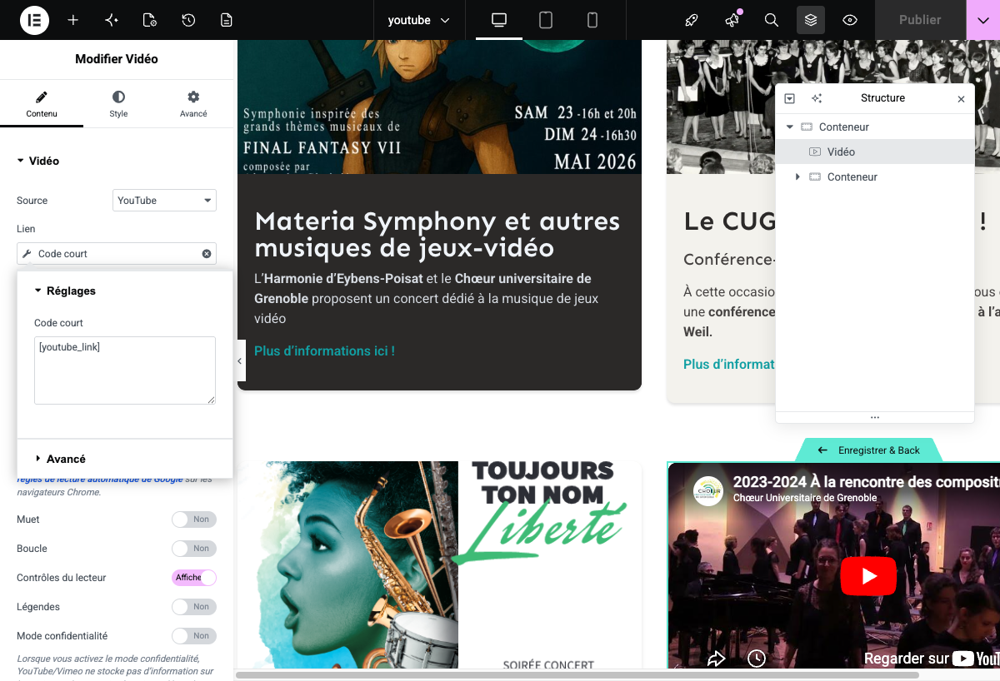
youtube. La section Réglages (visible quand la balise dynamique est active) affiche [youtube_link].Flux complet au rendu : la Grille de boucle Youtube affiche l'article le plus récent → Elementor instancie le template youtube dans le contexte de cet article → la balise dynamique Shortcode exécute [youtube_link] → le shortcode lit get_post_meta($id, 'youtube-link') et renvoie l'URL → Elementor l'injecte dans le champ youtube_url du widget Vidéo → le lecteur YouTube charge la bonne vidéo.
Les autres applications du pattern sur le site
Catégorie Programme — fichiers de travail
Chaque article Programme a 4 champs personnalisés (programme_youtube_playlist, programme_musescore, programme_livret_pdf, programme_mp3s). Pour chacun, un shortcode du même nom renvoie la valeur. Côté template Programme (Espace choristes) :
- Les boutons MuseScore / Livret PDF / MP3s ont leur champ URL branché en balise dynamique Shortcode avec
[programme_musescore],[programme_livret_pdf],[programme_mp3s]. - L'iframe YouTube de la playlist du semestre est rendue par un widget Shortcode Elementor qui appelle
[programme_youtube_playlist_embed]— ce shortcode produit l'<iframe>complet (560×315 par défaut) à partir de l'ID stocké dansprogramme_youtube_playlist.
Catégorie Billetterie — carte du lieu
Chaque article Billetterie a un champ event_map (le nom du lieu, ex. « Espace Bergès Villard-Bonnot »). Dans le template de boucle Billetterie, un widget Shortcode Elementor appelle [event_map_embed] — ce shortcode lit le champ et construit l'URL maps.google.com/maps?q=…&output=embed avec pin rouge. Pas besoin de coller un iframe Google Maps à la main pour chaque concert.
Catégorie Billetterie — affichage conditionnel du placeholder
Si aucun article Billetterie n'est actif (toutes les date_fin sont passées), un Conteneur "pas encore ouverte → inscrivez-vous à la newsletter" prend la place de la card billetterie sur la home. Le pattern :
- Le Conteneur placeholder porte la classe CSS
cug-cond-host. - À l'intérieur, un widget Shortcode invisible (classe
cug-cond) exécute[no_active_billetterie]. - Ce shortcode renvoie
·s'il n'y a aucune billetterie active, chaîne vide sinon. - Une règle CSS globale (
.cug-cond-host:has(.cug-cond:empty) { display: none }) cache le placeholder quand la sentinelle est vide.
Le même pattern cug-cond / cug-cond-host + shortcode lecteur de champ sert à cacher les sous-cartes vides du template Programme (Musescore, MP3s, livret, YouTube).
Catégorie CA — ordre d'affichage
Pas un shortcode ici, mais un mécanisme adjacent : un snippet active page-attributes sur les articles pour exposer le champ natif WordPress menu_order dans la sidebar Gutenberg. Le Loop Grid CA trie par menu_order ASC. Sans le snippet, le champ Ordre n'apparaît pas dans Gutenberg et on ne peut plus réordonner les membres.
- Le snippet concerné est-il actif dans Snippets → Tous les extraits ?
- L'article qui devrait alimenter le rendu a-t-il bien le champ personnalisé attendu, avec une valeur valide ?
- La balise dynamique Shortcode du widget Elementor pointe-t-elle bien sur le bon shortcode (sans typo, sans crochets oubliés) ?
Widgets atypiques utilisés sur le site
En plus des classiques (Heading, Image, Bouton, Texte, Conteneur), le site utilise une poignée de widgets Elementor moins évidents. Cette section les liste avec les pages qui les contiennent et les pièges courants.
Widget HTML · embeds externes
Bloc qui contient du code HTML brut. Sur le site, il sert à embarquer des iframes Google (Forms, Calendar, Maps) plutôt que d'utiliser un widget dédié.
- Infos pratiques
- 1 widget HTML = iframe Google Calendar (agenda des répétitions) · 1 widget HTML = iframe Google Forms (demande d'inscription)
- Billetterie
- 1 widget HTML = iframe Google Maps embed (carte des lieux du concert)
- Nous soutenir
- 1 widget HTML = iframe HelloAsso (formulaire de don, géré côté HelloAsso)
Pour modifier l'embed : sélectionner le widget HTML dans le canvas → le panneau de gauche affiche le code. Remplacer le bloc <iframe src="...">...</iframe> par celui fourni par Google (bouton Partager / Intégrer sur Google Forms, Google Calendar, Google Maps).
Widget Google Maps natif · widget dédié
Widget Elementor qui prend simplement une adresse (champ Localisation) et affiche la carte. Plus simple que le widget HTML mais moins personnalisable (un seul marqueur, pas de stylisation custom).
- Infos pratiques
- Carte de l'Espace Scénique Transdisciplinaire (EST) (lieu des répétitions)
Pour modifier : sélectionner le widget Map → panneau de gauche → changer le champ Localisation.
Widget Form Elementor Pro · form natif
Formulaire natif Elementor Pro avec actions configurables (email, intégration newsletter, redirection, etc.). Les soumissions peuvent être stockées dans Elementor (Submissions dans my.elementor.com) ou envoyées par email.
- Billetterie
- Form 1 champ email + bouton "S'inscrire" (vraisemblablement pour recevoir l'info des prochaines billetteries / newsletter)
Pour voir / modifier les actions : sélectionner le widget Form → onglet Contenu → Actions After Submit (email, MailChimp, redirect, etc.). Pour consulter les soumissions reçues : Elementor → Submissions dans le contenu WP, ou directement sur my.elementor.com.
Widget Onglets imbriqués (n-tabs) · interface tabbée
Widget Elementor qui crée un système d'onglets dont chaque onglet est un Conteneur indépendant. On peut donc mettre n'importe quel contenu dedans (textes, images, autres widgets, grilles de boucle…).
- Espace choristes
- 1 widget = les 7 onglets (Premiers pas, Le programme, Les news du CA, Photos, Vidéos, L'association, Anciens programmes)
Pour modifier le contenu d'un onglet : cliquer sur le titre d'onglet dans le canvas pour l'activer, puis travailler à l'intérieur de son Conteneur comme sur n'importe quelle page. Pour ajouter/retirer un onglet : sélectionner le widget Onglets imbriqués → panneau de gauche → ajouter/supprimer une entrée dans la liste des onglets.
Widget Galerie · photo stack
Liste de photos affichées en mosaïque avec lightbox au clic. Plus simple que Google Drive Gallery (qui lit depuis Drive), mais les photos doivent être uploadées dans la médiathèque WordPress.
- Le chœur
- Photos de groupe / coulisses dans les sections présentation
Pour ajouter/retirer : sélectionner le widget Galerie → onglet Contenu → Images → ajouter depuis la Médiathèque ou retirer une vignette.
Widget Shortcode · galerie Drive
Conteneur générique qui exécute un shortcode WordPress. Sur le site, sert à insérer la galerie Google Drive Gallery.
- Espace choristes · onglet Photos
- Widget Shortcode contenant
[sgdg path="Photos du Choeur"]. Détails plugin : Le plugin Google Drive Gallery.
L'infrastructure — vue d'ensemble
Cet onglet rassemble ce qui fait tourner le site en arrière-plan : les comptes, les abonnements, les automatisations. On y vient pour comprendre comment c'est branché, pour migrer un service, pour renouveler un abonnement, ou pour réparer une plomberie cassée. Pour les actions courantes (publier un article, changer la billetterie, etc.), aller dans Les essentiels sur un an.
Ce qui fait tourner cug38.fr
- Le nom de domaine
cug38.fr— registrar OVH. Renouvellement annuel. Pointe vers Elementor Cloud via DNS.- L'hébergement
- Elementor Cloud — héberge WordPress + Elementor Pro tout-en-un. Sauvegardes automatiques. Abonnement annuel séparé du domaine.
- Le site lui-même
- WordPress + Elementor — WordPress gère le contenu (pages, articles, plugins) ; Elementor gère le design (mise en page visuelle).
- Les fichiers de travail
- Google Drive du compte
orga@cug38.fr— partitions MuseScore, livrets PDF, MP3s, photos. Le site pointe vers Drive, ne stocke pas ces fichiers. - Les automatisations
- Un projet Google Apps Script côté
orga@cug38.fralimente le Sheet Newsletter à partir des inscriptions du formulaire S'inscrire.
- OVH — domaine. Si l'abonnement expire,
cug38.frne répond plus du tout. - Elementor Cloud — hébergement. Si l'abonnement expire, le site disparaît.
- Google
orga@cug38.fr— Drive (fichiers de travail + photos), Apps Script (newsletter), Forms (inscription). Mot de passe à conserver dans LastPass. - LastPass de l'association — coffre central. Sans accès LastPass, on ne peut plus se connecter à rien.
- HelloAsso — collecte des dons (page Nous soutenir). Compte associatif.
- GitHub
orga-cug38— héberge ce guide (GitHub Pages). Login via SSO Google avecorga@cug38.fr.
Où est hébergé ce guide, et comment le mettre à jour
Cette page est servie par GitHub Pages sur le compte orga-cug38 (repo orga-cug38/guide-site-web). Volontairement non indexé par les moteurs (robots.txt + meta noindex) — ouvrable par lien direct uniquement.
- URL publique
- orga-cug38.github.io/guide-site-web/
- Compte GitHub
orga-cug38— connexion via SSO Google avecorga@cug38.fr(bouton Continue with Google sur la page de login).- Hébergement
- GitHub Pages, gratuit, tant que le compte reste actif et que le repo reste public.
Pour modifier ce guide : ouvrir Claude Cowork (ou un agent IA équivalent qui sait piloter Playwright / un navigateur et faire un git push) et lui demander en langage naturel ce qu'on veut changer. Pour pousser, Claude aura besoin d'un Personal Access Token GitHub à scope repo (à générer sur github.com/settings/tokens et à supprimer après usage).
Pour une modif ponctuelle sans Claude, on peut aussi éditer un fichier directement sur l'interface GitHub (bouton crayon en haut à droite d'un fichier dans le repo).
Nom de domaine — OVH
Le domaine cug38.fr est l'URL publique du site. Il est géré chez OVH (le registrar) et pointe vers Elementor Cloud via des enregistrements DNS. Domaine et hébergement sont deux abonnements distincts à renouveler.
Fiche d'identité
- Domaine
cug38.fr- Registrar
- OVH (manager.eu.ovhcloud.com)
- Titulaire
- Chœur des Universités de Grenoble
- Créé le
- 16 septembre 2014
- Renouvellement
- Annuel, autour du 1er septembre chaque année. Prochaine expiration : 15 septembre 2026.
- Coût annuel
- ~10,66 € TTC (8,88 € HT au tarif 2025). Tarif stable, légère hausse d'année en année.
- Email de notification OVH
tresorerie@cug38.fr- Identifiants OVH
- Disponibles dans Lastpass (entrée OVH CUG)
tresorerie@cug38.fr ~30 jours avant l'expiration. Sans paiement, le site devient inaccessible.
Page d'information du domaine
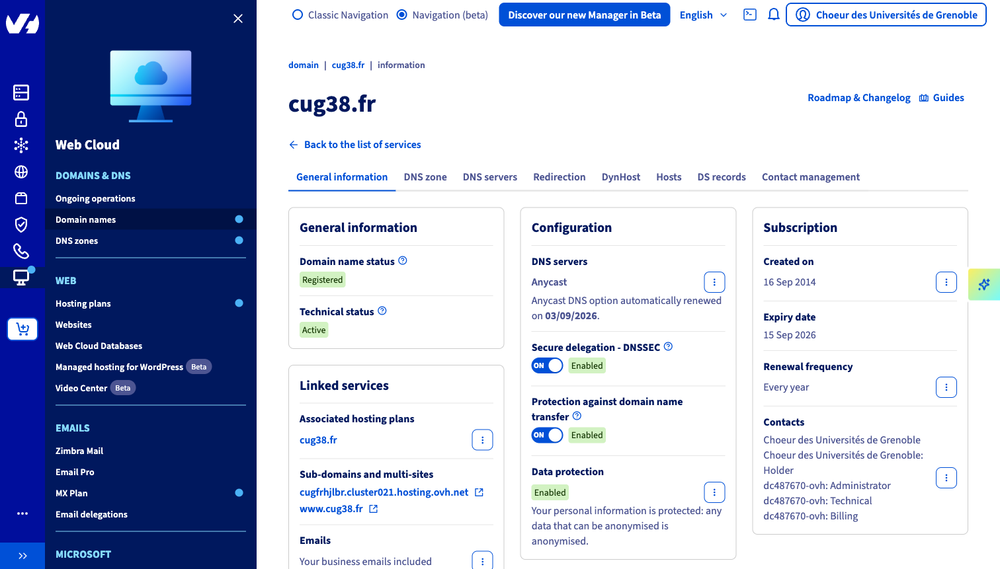
Historique de facturation
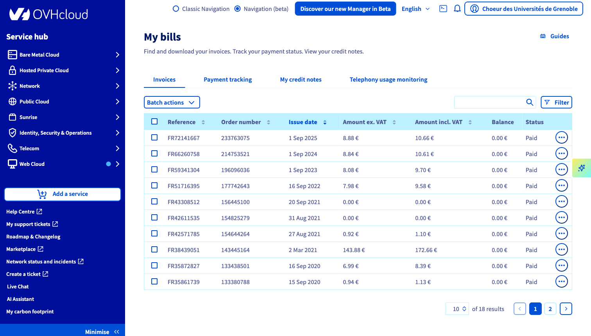
Moyens de paiement
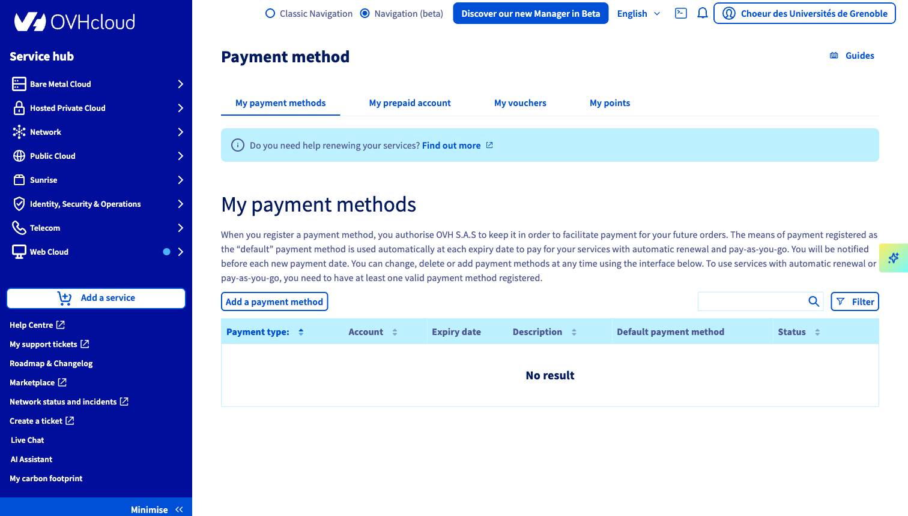
Le lien avec Elementor (DNS)
Côté OVH, deux enregistrements DNS font pointer le site vers Elementor Cloud :
Les 2 entrées qui pointent vers Elementor
- A Record
cug38.fr.→162.159.137.9(l'IP d'Elementor Cloud)- CNAME
www.cug38.fr.→uelilxgl.elementor.cloud.(le sous-domaine technique d'Elementor pour notre site)
Ces valeurs sont fournies par Elementor (lisibles dans l'espace admin Elementor → Domains) et doivent être reportées à l'identique dans la zone DNS chez OVH.
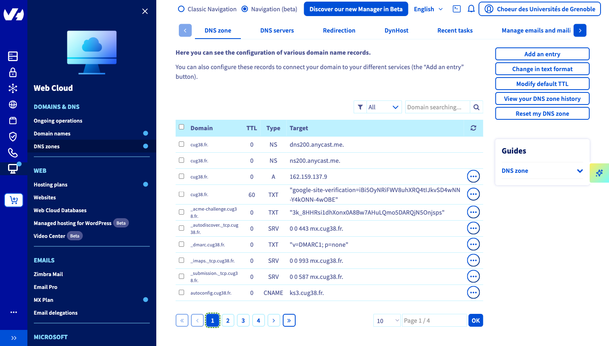
AvancéDécodage des 33 enregistrements DNS
La zone DNS contient beaucoup plus que les 2 pointeurs vers Elementor. Voici le décodage par groupe — utile pour ne pas paniquer quand on les voit, mais à ne consulter que si vous avez besoin de comprendre ou modifier la zone (sinon, c'est inutile au quotidien).
1. Serveurs DNS d'OVH (NS) — 2 entrées
cug38.fr.→ NS →dns200.anycast.me.cug38.fr.→ NS →ns200.anycast.me.
Définissent que la zone est hébergée chez OVH. À ne pas toucher.
2. Pointage vers Elementor Cloud — 2 entrées
cug38.fr.→ A →162.159.137.9www.cug38.fr.→ CNAME →uelilxgl.elementor.cloud.
Ce sont les 2 entrées critiques pour que le site marche. Visibles aussi côté Elementor (cf. espace admin Elementor).
3. Certificat HTTPS (ACME / Let's Encrypt) — 1 entrée
_acme-challenge.cug38.fr.→ TXT →"3k_8HHRsi1d..."
Permet à Let's Encrypt (via Elementor) de prouver qu'on contrôle le domaine pour générer le certificat HTTPS. Renouvelé automatiquement.
4. Mails @cug38.fr — Google Workspace (Gmail)
cug38.fr.→ MX →1 smtp.google.com.(serveur mail principal = Gmail)cug38.fr.→ TXT (SPF) →"v=spf1 include:_spf.google.com ~all"(autorise Google à envoyer pour le domaine)google._domainkey.cug38.fr.→ TXT (DKIM) →"v=DKIM1; k=rsa; p=..."(signature cryptographique des emails)_dmarc.cug38.fr.→ TXT →"v=DMARC1; p=none"(politique anti-usurpation)smtp.cug38.fr./imap.cug38.fr.→ CNAME →smtp.google.com.(alias pour configurer les clients mail)
L'ensemble permet d'envoyer/recevoir les mails @cug38.fr via Gmail. À ne pas toucher — toute modif peut faire que les mails n'arrivent plus.
5. Vérifications Google (Search Console, etc.) — 5 entrées TXT
- 5 enregistrements TXT
"google-site-verification=..."sur le domaine racine.
Permettent à différents comptes Google d'avoir prouvé qu'ils contrôlent le domaine (Search Console, Analytics, Workspace). Plusieurs car ajoutés par différents administrateurs au fil du temps. Inoffensifs.
6. Ancien serveur dédié OVH (ks3.cug38.fr) — environ 10 entrées
ks3.cug38.fr.→ A →37.187.98.114(l'IP du vieux serveur dédié OVH)autoconfig.cug38.fr./cloud_old.cug38.fr./phpmyadmin.cug38.fr./webmail.cug38.fr./www-dev.cug38.fr./www-old.cug38.fr./www2.cug38.fr.→ tous CNAME vers ks3- SRV records
_autodiscover,_imaps,_submissionqui pointaient versmx.cug38.fr(l'ancien mail OVH) - DKIM OVH historique
s20180913252._domainkey...etovhmo3770721-selector1/2._domainkey...
Résidus d'une ancienne configuration avant la migration vers Elementor + Google Workspace. Probablement plus rien d'actif derrière, mais ces entrées restent inoffensives tant qu'on ne s'en sert pas. Un grand nettoyage serait possible, mais à faire à tête reposée et avec sauvegarde de la zone DNS au préalable.
Elementor Cloud
Elementor n'est pas seulement le constructeur de pages — c'est aussi l'hébergeur du site. Tout est packagé : serveur, certificat HTTPS, sauvegardes quotidiennes automatiques, Elementor Pro inclus. Pas de cPanel, pas d'Apache à gérer.
Fiche d'identité
- Service
- Elementor Hosting — Basic (Cloud Website)
- Espace admin
- my.elementor.com
- Compte de connexion
- Google
orga@cug38.fr(identifiants dans Lastpass) - Site créé le
- 28 novembre 2024
- Coût annuel
- 215,86 € (facturation annuelle)
- Renouvellement
- Automatique, le 28 novembre chaque année. Prochain renouvellement : 28 nov 2026.
- Moyen de paiement
- Carte bancaire se terminant par
1810(enregistrée pour prélèvement auto) - Quota du plan
- 1 website · 30 GB bandwidth · 10 GB storage · 25k visiteurs / mois
- Usage actuel
- 1 GB storage utilisé (10%), 2.2 GB bandwidth (7.3%) — large marge
1810 est toujours valide. Si la carte expire, Elementor enverra des mails de relance à orga@cug38.fr et finira par couper le site. Vérifier que la carte de la trésorerie est à jour avant fin novembre chaque année.
Espace admin sur my.elementor.com
Toute la gestion de l'hébergement passe par my.elementor.com. Le menu de gauche, une fois sur le site CUG, donne : Overview, Domains, Emails, Backups, Plugins, Advanced, Team.
cug38.fr, domaine temporaire uelilxgl.elementor.cloud, et les valeurs DNS à reporter chez OVH (A: 162.159.137.9, CNAME: uelilxgl.elementor.cloud).Facturation & abonnement
L'abonnement est géré dans Account settings → Subscriptions (icône profil en haut à droite). On y voit le plan actif et un bouton "Manage this subscription" pour ouvrir le détail.
Sauvegardes automatiques
Elementor Cloud effectue une sauvegarde automatique quotidienne du site, en soirée (entre 18h et minuit GMT). On peut aussi en déclencher une à la main avant une grosse modif.
Bon à savoir sur les backups
- Quotidiennes automatiques — déclenchées en soirée (18h–23h59 GMT), nommées
automatic_backup. Taille : ~676 MB par sauvegarde. - Rétention : 14 jours — au-delà, les anciennes sont écrasées par les nouvelles. Pour conserver plus longtemps, il faudrait monter de plan.
- Sauvegarde manuelle — bouton "Create a manual backup" en haut à droite. Pratique avant une grosse modif ou mise à jour.
- Restauration — en cliquant sur une sauvegarde dans la liste, on a l'option "Restore". L'opération remet le site dans l'état exact de la sauvegarde (contenu, base de données, médias).
WordPress + Elementor (le site)
Côté contenu, le site repose sur le couple WordPress + Elementor. Comprendre qui fait quoi évite de chercher au mauvais endroit quand on veut modifier quelque chose.
En une carte
- CMS
- WordPress 6.9
- Constructeur
- Elementor Pro v4
- Thème
- Hello Elementor
- URL d'admin
cug38.fr/wp-admin- Connexion
- Via Elementor (email + mot de passe stockés dans LastPass)
cug38.fr/wp-admin, puis les identifiants Elementor (email + mot de passe) récupérés dans le coffre LastPass de l'association, et éventuellement un code 2FA à 6 chiffres reçu par mail. Procédure pas-à-pas : Connexion & admin → Se connecter à WordPress.
WordPress — le moteur
WordPress gère les pages, les articles, les utilisateurs, la médiathèque, les extensions. Toute action qui n'est pas du design pur se passe dans WordPress : créer un article, changer un mot de passe, ajouter une image dans la médiathèque, gérer les extensions.
Pour un tour complet de WordPress, voir Le contenu WordPress.
Elementor — le constructeur visuel
Elementor se branche sur WordPress et permet d'éditer les pages en glisser-déposer, sans toucher au code. Toutes les pages "publiques" (Accueil, Le chœur, Nos concerts…) sont construites avec lui.
Les articles, eux, restent dans l'éditeur natif WordPress (Gutenberg) — pas besoin d'Elementor.
Google Drive
Le Drive du compte orga@cug38.fr stocke tous les fichiers que le site référence : partitions MuseScore, livrets PDF, photos de concerts, sheet de la newsletter. Deux mécanismes selon le type de contenu — liens directs ou plugin galerie.
Structure du Drive — dossier Fichiers site web
Tout ce qui sert au site (hors photos de chœur) vit dans le dossier racine Fichiers site web du Drive orga@cug38.fr.
Les sous-dossiers et fichiers
- Guide Musescore
- Ressources MuseScore (logiciel d'apprentissage des partitions).
- Programme
- Tous les fichiers de travail du programme musical (partitions
.mscz, livrets PDF, MP3s par pupitre). Pointé par les boutons de l'onglet Le programme dans l'espace choriste. - Structure associative
- Documents administratifs de l'association.
- Newsletter
- Sheet Google de la liste des inscrits à la newsletter (cf. ci-dessous).
Note : les photos du chœur ne vivent pas ici mais dans un autre dossier (My Drive → Archives (articles, photos) → Photos du Choeur) — voir mécanisme galerie ci-dessous.
Le dossier Programme en détail
- Fichiers de travail
- Sources MuseScore (
.mscz) — pointé par les boutons "Programme Jeux vidéos" / "Programme conférence" de l'onglet Le programme. - Livrets
- PDF des livrets distribués aux choristes — pointés par les boutons "Livret …".
- MP3s
- Pistes audio par pupitre, utilisées en complément des vidéos YouTube pour s'entraîner.
Procédure de mise à jour d'un fichier
- Ouvrir Drive (compte
orga@cug38.fr) → Mon Drive → Fichiers site web → Programme → [sous-dossier voulu]. - Pour mettre à jour un fichier existant (le plus propre — l'URL ne change pas, les boutons du site restent valides) : clic-droit sur le fichier → "Gérer les versions" → "Importer une nouvelle version".
- Pour ajouter un nouveau fichier : glisser-déposer dans le dossier. Puis si ce fichier doit être accessible depuis le site, modifier le widget bouton correspondant dans Elementor pour pointer vers la nouvelle URL.
Note : un Sheet Newsletter vit aussi dans Fichiers site web mais son fonctionnement (alimentation automatique par un Apps Script) est documenté dans son propre sous-onglet — voir L'infrastructure → Le Sheet Newsletter.
Les deux mécanismes côté site
1. Fichiers de travail — liens directs vers Drive
Les boutons "Programme MuseScore", "Livret PDF", etc. de l'espace choristes pointent directement vers des URL Google Drive (pas via un plugin WordPress). Quand un choriste clique, Drive ouvre le fichier dans un nouvel onglet.
2. Galerie photo — plugin Google Drive Gallery
L'onglet "Photos" de l'espace choristes affiche le contenu du dossier Archives (articles, photos) → Photos du Choeur en mode galerie, via l'extension Google Drive Gallery (slug technique skaut-google-drive-gallery / sgdg). Repérable aux URLs qui contiennent ?sgdg-path-... quand on navigue. Réglages du plugin et procédure d'ajout de photos : Le plugin Google Drive Gallery.
Pour les réglages des extensions, voir Les extensions dans le contenu.
Le Sheet Newsletter
Un Google Sheet hébergé sur le Drive orga@cug38.fr qui consolide la liste des contacts inscrits via le formulaire S'inscrire de la page Billetterie. Il est alimenté automatiquement par un projet Apps Script. On le consulte au moment d'envoyer un mail aux abonnés (cf. Les essentiels sur un an → Ouverture de la billetterie → Étape 3).
Pipeline d'alimentation automatique
Le fichier Newsletter dans Fichiers site web est un Google Sheet qui consolide la liste des contacts inscrits via le formulaire S'inscrire de la page Billetterie. Pour s'en servir : ouvrir le Sheet et copier la colonne emails pour la prochaine communication.
Pipeline complet (3 maillons)
- Formulaire Elementor Pro côté visiteur sur la page Billetterie → email envoyé à
orga@cug38.frà chaque soumission (action Email configurée dans le widget Form). - Apps Script Gestion Newsletter sur
orga@cug38.fr— fonctionimportEmailsToSheetqui tourne toutes les 2 heures via un déclencheur horaire. Elle scanne les emails d'inscription (expéditeuruelilxgl@elementor.cloud, sujet Inscription Newsletter) non encore traités, extrait l'adresse du corps (Email : …), l'ajoute au Sheet, puis applique le labelnewsletter-traitepour ne pas re-traiter. - Sheet Newsletter dans
My Drive → Fichiers site web— liste consolidée prête à servir.
orga@cug38.fr → script.google.com → projet Gestion Newsletter. Code dans Éditeur → Code.gs, déclencheurs dans l'icône horloge à gauche, exécutions et erreurs dans Exécutions.
AvancéCode source du script (à recréer en cas de perte du projet)
Fichier Code.gs du projet Gestion Newsletter. À coller à l'identique dans un nouveau projet Apps Script sur orga@cug38.fr, puis configurer un déclencheur horaire toutes les 2 h sur la fonction importEmailsToSheet.
/**
* Gestion Newsletter — importe les emails du formulaire S'inscrire de la page Billetterie
* (Form Elementor Pro) depuis Gmail vers le Sheet Newsletter.
*/
// ID du Sheet Newsletter dans Fichiers site web (Drive orga@cug38.fr)
var SHEET_ID = '1B9tFG2VGFEoyunPNthFsS7UhYDP0suRNmrEeiz09blA';
// Label appliqué aux emails déjà traités
var PROCESSED_LABEL = 'newsletter-traite';
// Requête Gmail pour trouver les inscriptions non encore traitées
var GMAIL_QUERY = 'from:uelilxgl@elementor.cloud subject:"Inscription Newsletter" -label:' + PROCESSED_LABEL;
function importEmailsToSheet() {
var sheet = SpreadsheetApp.openById(SHEET_ID).getSheets()[0];
// Récupère les emails déjà présents dans le Sheet pour éviter les doublons
var existing = new Set();
var values = sheet.getRange('A:A').getValues();
for (var i = 0; i < values.length; i++) {
var v = String(values[i][0] || '').toLowerCase().trim();
if (v) existing.add(v);
}
// Récupère (ou crée) le label "déjà traité"
var label = GmailApp.getUserLabelByName(PROCESSED_LABEL);
if (!label) label = GmailApp.createLabel(PROCESSED_LABEL);
// Cherche les threads d'inscription non traités
var threads = GmailApp.search(GMAIL_QUERY, 0, 100);
var added = 0;
for (var t = 0; t < threads.length; t++) {
var thread = threads[t];
var messages = thread.getMessages();
for (var m = 0; m < messages.length; m++) {
var body = messages[m].getPlainBody() || '';
var match = body.match(/Email\s*:\s*([^\s<>]+@[^\s<>]+)/i);
if (match) {
var email = match[1].trim().toLowerCase().replace(/[.,;]+$/, '');
if (email && !existing.has(email)) {
sheet.appendRow([email]);
existing.add(email);
added++;
}
}
}
thread.addLabel(label);
}
console.log('Newsletter import : ' + added + ' nouvel(s) email(s) ajouté(s) · ' + threads.length + ' thread(s) traité(s).');
}Si ça casse — playbook des incidents fréquents
Récap des symptômes qu'on peut rencontrer et le bon endroit où aller chercher dans le guide. À garder sous le coude.
🔴 Le site est totalement inaccessible
- Domaine expiré ? Si le mail de relance OVH (
tresorerie@cug38.fr, ~30 jours avant) a été ignoré, le domaine peut être suspendu. Vérifier OVH → renouvellement. - Hébergement Elementor expiré ? Vérifier l'état de l'abonnement Elementor Cloud sur my.elementor.com et que la carte bancaire est valide. Voir Elementor Cloud.
- DNS modifié par erreur ? Vérifier les 2 enregistrements
A/CNAMEqui pointent vers Elementor dans la zone DNS OVH.
🔐 Je n'arrive plus à me connecter
- Vérifier d'abord que tu suis bien la procédure : Se connecter à WordPress (Log in with Elementor + email/mdp LastPass, jamais Continue with Google).
- Le bug "Something went wrong" est normal au 1er essai — fermer l'onglet, re-cliquer Log in with Elementor.
- Si le mot de passe ne marche plus : Forgot your password? sur la page Sign in Elementor, mail de reset sur
orga@cug38.fr. - Si le 2FA bloque : code à 6 chiffres reçu sur
orga@cug38.fr, valable 10 min.
📷 Les photos de l'espace choriste n'apparaissent plus
- Aller dans Le plugin Google Drive Gallery et vérifier que la connexion OAuth est toujours active (badge vert).
- Si la galerie est vide : cliquer Clear Posts Cache dans le bandeau noir d'admin en haut de la page Espace Choristes côté public.
- Si rien ne revient : voir le bloc Avancé "Migration vers un nouveau Drive" pour reconfigurer les credentials OAuth.
📧 Le Sheet Newsletter ne se met plus à jour
- Aller dans script.google.com (compte
orga@cug38.fr) → projet Gestion Newsletter → Exécutions. Si plusieurs Échec récents, regarder le détail. - Vérifier le déclencheur (icône horloge) — doit être actif, horaire toutes les 2 h.
- Si le projet a disparu : voir Billetterie → Le formulaire S'inscrire (bloc Avancé déroulé) qui contient le code source à recréer.
🎬 La vidéo YouTube de la home a disparu
- Vérifier que le snippet CUG — Shortcode [youtube_link]… est bien actif dans Snippets → Tous les extraits.
- Vérifier que le dernier article catégorie Youtube a bien son champ personnalisé
youtube-linkrenseigné avec une URL valide. Voir Le pattern shortcode/dynamic-tag pour la mécanique complète.
🎨 Le header / footer ne s'affiche plus correctement
- Aller dans Header & footer via le bandeau d'admin → Modifier avec Elementor → header (ou footer).
- Restaurer une version antérieure via l'Historique (icône horloge en haut à gauche dans Elementor) si la modif récente a cassé.
- Si menu vide : vérifier Apparence → Menus que Menu desktop est bien attribué à l'emplacement En-tête.
🆘 J'ai cassé quelque chose et je veux revenir en arrière
- Sur une page Elementor : icône horloge en haut à gauche de la barre d'Elementor → liste des révisions, restaurer une version.
- Sur le site entier : Elementor Cloud sauvegarde chaque nuit. Aller sur my.elementor.com → site CUG → Hosting → Backups → restaurer une sauvegarde.
- Sur un article (Gutenberg) : ouvrir l'article, panneau de droite → Révisions (en bas), restaurer une version.